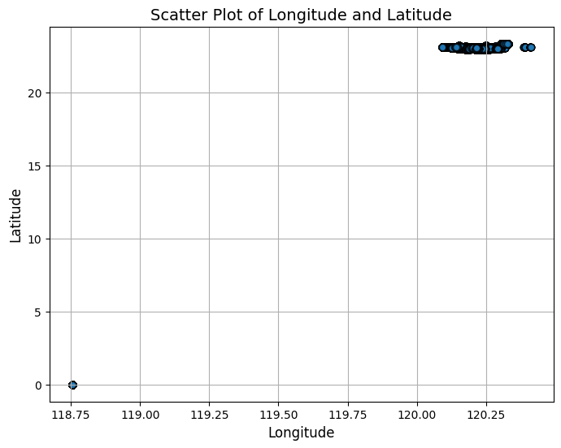
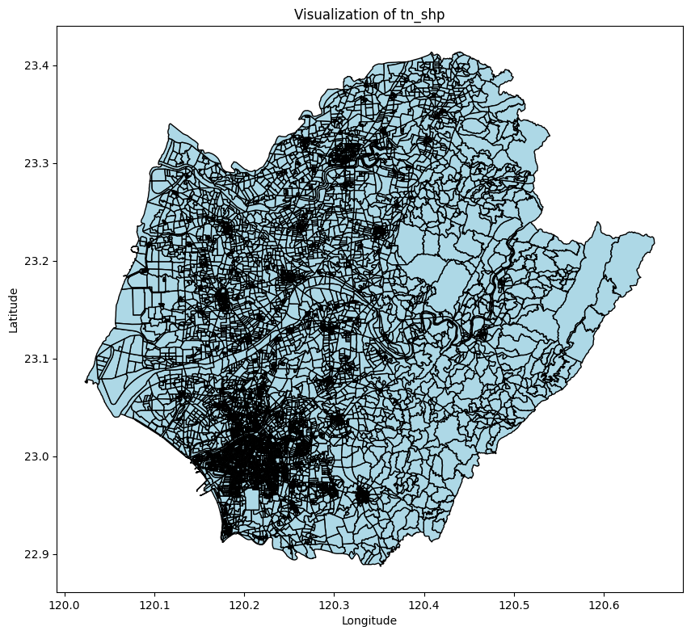

'''Import basic libraries'''
import pandas as pd
import numpy as np
import seaborn as sns
import geopandas as gpd
import matplotlib.pyplot as plt
from shapely.geometry import Point
import os
#Import dengue datafile
dengue = pd.read_csv("C:/Users/Patrick/Downloads/Dengue_Daily.csv")# Import basic libraries
import pandas as pd
import numpy as np
import seaborn as sns
import geopandas as gpd
import matplotlib.pyplot as plt
from shapely.geometry import Point
import os
from pathlib import Path
import sys
def find_project_root(current: Path, marker: str = ".git"):
for parent in current.resolve().parents:
if (parent / marker).exists():
return parent
return current.resolve() # fallback
PROJECT_ROOT = find_project_root(Path.cwd())
RAW_DIR = PROJECT_ROOT / "data" / "raw"
INTERIM_DIR = PROJECT_ROOT / "data" / "interim"
PROCESSED_DIR = PROJECT_ROOT / "data" / "processed"
# Load in dengue data
dengue = pd.read_csv(RAW_DIR / "TW_DENGUE" / "Dengue_Daily.csv")Script to Clean Up Data
#Checking shape of dengue file
print(dengue.shape)
#Drop imported cases and reset index
dengue_local = dengue[dengue['是否境外移入']=='否'].reset_index(drop=True)
#Checking shape of local dengue cases
print(dengue_local.shape)(107248, 26)
(102296, 26)import pandas as pd
from pathlib import Path
# Directory containing the CSV files directly
base_dir = RAW_DIR / "TW_DENGUE"
# Loop through files directly in the directory
for file_path in base_dir.iterdir():
if file_path.is_file() and file_path.suffix == ".csv":
# Create a variable name from the filename (remove extension, replace spaces/special chars with underscores)
var_name = file_path.stem.replace(" ", "_").replace("-", "_").replace("（", "").replace("）", "").replace("(", "").replace(")", "")
for encoding in ["utf-8", "big5"]:
try:
globals()[var_name] = pd.read_csv(file_path, encoding=encoding)
print(f"Loaded {file_path.name} into variable '{var_name}' using {encoding}.")
break
except Exception as e:
print(f"Failed to read {file_path.name} with {encoding}: {e}")Failed to read BSA_AGE_TN_2015.csv with utf-8: 'utf-8' codec can't decode byte 0xa4 in position 0: invalid start byte
Loaded BSA_AGE_TN_2015.csv into variable 'BSA_AGE_TN_2015' using big5.
Loaded BSA_AGE_TN_2023.csv into variable 'BSA_AGE_TN_2023' using utf-8.
Failed to read BSA_DEM_TN_2015.csv with utf-8: 'utf-8' codec can't decode byte 0xa4 in position 0: invalid start byte
Loaded BSA_DEM_TN_2015.csv into variable 'BSA_DEM_TN_2015' using big5.
Loaded BSA_DEM_TN_2023.csv into variable 'BSA_DEM_TN_2023' using utf-8.
Failed to read BSA_POP_TN_2015.csv with utf-8: 'utf-8' codec can't decode byte 0xa4 in position 0: invalid start byte
Loaded BSA_POP_TN_2015.csv into variable 'BSA_POP_TN_2015' using big5.
Loaded BSA_POP_TN_2023.csv into variable 'BSA_POP_TN_2023' using utf-8.
Loaded Dengue_Daily.csv into variable 'Dengue_Daily' using utf-8.
Loaded VIL_AGE_TN_2015.csv into variable 'VIL_AGE_TN_2015' using utf-8.
Loaded VIL_AGE_TN_2023.csv into variable 'VIL_AGE_TN_2023' using utf-8.
Loaded VIL_POP_TN_2015.csv into variable 'VIL_POP_TN_2015' using utf-8.
Loaded VIL_POP_TN_2023.csv into variable 'VIL_POP_TN_2023' using utf-8.# Read in Tainan shapefile
tn_bsa_shp = gpd.read_file(r'D:\Projects\TMU\gee_dengue\data\external\SHP_TN')
tn_bsa_shp = tn_bsa_shp.to_crs(epsg=4326)
fig, ax = plt.subplots(figsize=(10, 10))
tn_bsa_shp.plot(ax=ax, color='lightblue', edgecolor='black')
plt.title("Visualization of tn_bsa_shp")
plt.xlabel("Longitude")
plt.ylabel("Latitude")
plt.show()import pandas as pd
# Columns to merge
age_cols = ['A0A9_CNT', 'A0A9_M_CNT', 'A0A9_F_CNT',
'A10A19_CNT', 'A10A19_M_CNT', 'A10A19_F_CNT', 'A20A29_CNT',
'A20A29_M_CNT', 'A20A29_F_CNT', 'A30A39_CNT', 'A30A39_M_CNT',
'A30A39_F_CNT', 'A40A49_CNT', 'A40A49_M_CNT', 'A40A49_F_CNT',
'A50A59_CNT', 'A50A59_M_CNT', 'A50A59_F_CNT', 'A60A69_CNT',
'A60A69_M_CNT', 'A60A69_F_CNT', 'A70A79_CNT', 'A70A79_M_CNT',
'A70A79_F_CNT', 'A80A89_CNT', 'A80A89_M_CNT', 'A80A89_F_CNT',
'A90A99_CNT', 'A90A99_M_CNT', 'A90A99_F_CNT', 'A100UP_10_CNT',
'A100UP_M_10_CNT', 'A100UP_F_10_CNT']
pop_cols = ['H_CNT', 'P_CNT', 'M_CNT', 'F_CNT']
# Function to merge with prefix
def merge_with_prefix(base_df, merge_df, cols, year_prefix):
temp_df = merge_df[['CODEBASE'] + cols].copy()
temp_df = temp_df.rename(columns={col: f'{year_prefix}{col}' for col in cols})
return base_df.merge(temp_df, on='CODEBASE', how='left')
# Merge AGE 2023
tn_bsa_shp = merge_with_prefix(tn_bsa_shp, BSA_AGE_TN_2023, age_cols, 'Y2023_')
# Merge AGE 2015
tn_bsa_shp = merge_with_prefix(tn_bsa_shp, BSA_AGE_TN_2015, age_cols, 'Y2015_')
# Merge POP 2023
tn_bsa_shp = merge_with_prefix(tn_bsa_shp, BSA_POP_TN_2023, pop_cols, 'Y2023_')
# Merge POP 2015
tn_bsa_shp = merge_with_prefix(tn_bsa_shp, BSA_POP_TN_2015, pop_cols, 'Y2015_')# Tally infections per region code
dengue_2015_counts = local_tn_Dengue_2015['最小統計區'].value_counts().reset_index()
dengue_2015_counts.columns = ['CODEBASE', 'Y2015_dengue']
dengue_2023_counts = local_tn_Dengue_2023['最小統計區'].value_counts().reset_index()
dengue_2023_counts.columns = ['CODEBASE', 'Y2023_dengue']
# Merge the counts into the shapefile GeoDataFrame
tn_bsa_shp = tn_bsa_shp.merge(dengue_2015_counts, on='CODEBASE', how='left')
tn_bsa_shp = tn_bsa_shp.merge(dengue_2023_counts, on='CODEBASE', how='left')
# Optional: Fill NaN with 0 (regions with zero cases)
tn_bsa_shp['Y2015_dengue'] = tn_bsa_shp['Y2015_dengue'].fillna(0).astype(int)
tn_bsa_shp['Y2023_dengue'] = tn_bsa_shp['Y2023_dengue'].fillna(0).astype(int)print(list(tn_bsa_shp.columns))['U_ID', 'CODEBASE', 'CODE1', 'CODE2', 'TOWN_ID', 'TOWN', 'COUNTY_ID', 'COUNTY', 'X', 'Y', 'AREA', 'geometry', 'Y2023_A0A9_CNT', 'Y2023_A0A9_M_CNT', 'Y2023_A0A9_F_CNT', 'Y2023_A10A19_CNT', 'Y2023_A10A19_M_CNT', 'Y2023_A10A19_F_CNT', 'Y2023_A20A29_CNT', 'Y2023_A20A29_M_CNT', 'Y2023_A20A29_F_CNT', 'Y2023_A30A39_CNT', 'Y2023_A30A39_M_CNT', 'Y2023_A30A39_F_CNT', 'Y2023_A40A49_CNT', 'Y2023_A40A49_M_CNT', 'Y2023_A40A49_F_CNT', 'Y2023_A50A59_CNT', 'Y2023_A50A59_M_CNT', 'Y2023_A50A59_F_CNT', 'Y2023_A60A69_CNT', 'Y2023_A60A69_M_CNT', 'Y2023_A60A69_F_CNT', 'Y2023_A70A79_CNT', 'Y2023_A70A79_M_CNT', 'Y2023_A70A79_F_CNT', 'Y2023_A80A89_CNT', 'Y2023_A80A89_M_CNT', 'Y2023_A80A89_F_CNT', 'Y2023_A90A99_CNT', 'Y2023_A90A99_M_CNT', 'Y2023_A90A99_F_CNT', 'Y2023_A100UP_10_CNT', 'Y2023_A100UP_M_10_CNT', 'Y2023_A100UP_F_10_CNT', 'Y2015_A0A9_CNT', 'Y2015_A0A9_M_CNT', 'Y2015_A0A9_F_CNT', 'Y2015_A10A19_CNT', 'Y2015_A10A19_M_CNT', 'Y2015_A10A19_F_CNT', 'Y2015_A20A29_CNT', 'Y2015_A20A29_M_CNT', 'Y2015_A20A29_F_CNT', 'Y2015_A30A39_CNT', 'Y2015_A30A39_M_CNT', 'Y2015_A30A39_F_CNT', 'Y2015_A40A49_CNT', 'Y2015_A40A49_M_CNT', 'Y2015_A40A49_F_CNT', 'Y2015_A50A59_CNT', 'Y2015_A50A59_M_CNT', 'Y2015_A50A59_F_CNT', 'Y2015_A60A69_CNT', 'Y2015_A60A69_M_CNT', 'Y2015_A60A69_F_CNT', 'Y2015_A70A79_CNT', 'Y2015_A70A79_M_CNT', 'Y2015_A70A79_F_CNT', 'Y2015_A80A89_CNT', 'Y2015_A80A89_M_CNT', 'Y2015_A80A89_F_CNT', 'Y2015_A90A99_CNT', 'Y2015_A90A99_M_CNT', 'Y2015_A90A99_F_CNT', 'Y2015_A100UP_10_CNT', 'Y2015_A100UP_M_10_CNT', 'Y2015_A100UP_F_10_CNT', 'Y2023_H_CNT', 'Y2023_P_CNT', 'Y2023_M_CNT', 'Y2023_F_CNT', 'Y2015_H_CNT', 'Y2015_P_CNT', 'Y2015_M_CNT', 'Y2015_F_CNT', 'Y2015_dengue', 'Y2023_dengue']# Read in Tainan shapefile
tn_vil_shp = gpd.read_file(r'D:\Projects\TMU\gee_dengue\data\external\10tnvillage')
tn_vil_shp = tn_vil_shp.to_crs(epsg=4326)
fig, ax = plt.subplots(figsize=(10, 10))
tn_vil_shp.plot(ax=ax, color='lightblue', edgecolor='black')
plt.title("Visualization of tn_vil_shp")
plt.xlabel("Longitude")
plt.ylabel("Latitude")
plt.show()
VIL_AGE_TN_2015 = VIL_AGE_TN_2015.rename(columns={'V_ID': 'VILLAGE_ID'})
VIL_POP_TN_2015 = VIL_POP_TN_2015.rename(columns={'V_ID': 'VILLAGE_ID'})
VIL_AGE_TN_2023 = VIL_AGE_TN_2023.rename(columns={'V_ID': 'VILLAGE_ID'})
VIL_POP_TN_2023 = VIL_POP_TN_2023.rename(columns={'V_ID': 'VILLAGE_ID'})VIL_AGE_TN_2023| COUNTY_ID | COUNTY | TOWN_ID | TOWN | VILLAGE_ID | VILLAGE | A0A9_CNT | A0A9_M_CNT | A0A9_F_CNT | A10A19_CNT | A10A19_M_CNT | A10A19_F_CNT | A20A29_CNT | A20A29_M_CNT | A20A29_F_CNT | A30A39_CNT | A30A39_M_CNT | A30A39_F_CNT | A40A49_CNT | A40A49_M_CNT | A40A49_F_CNT | A50A59_CNT | A50A59_M_CNT | A50A59_F_CNT | A60A69_CNT | A60A69_M_CNT | A60A69_F_CNT | A70A79_CNT | A70A79_M_CNT | A70A79_F_CNT | A80A89_CNT | A80A89_M_CNT | A80A89_F_CNT | A90A99_CNT | A90A99_M_CNT | A90A99_F_CNT | A100UP_CNT | A100UP_M_CNT | A100UP_F_CNT | INFO_TIME | |
|---|---|---|---|---|---|---|---|---|---|---|---|---|---|---|---|---|---|---|---|---|---|---|---|---|---|---|---|---|---|---|---|---|---|---|---|---|---|---|---|---|
| 0 | 縣市代碼 | 縣市名稱 | 鄉鎮市區代碼 | 鄉鎮市區名稱 | 村里代碼 | 村里名稱 | 0-9歲人口數 | 0-9歲男性人口數 | 0-9歲女性人口數 | 10-19歲人口數 | 10-19歲男性人口數 | 10-19歲女性人口數 | 20-29歲人口數 | 20-29歲男性人口數 | 20-29歲女性人口數 | 30-39歲人口數 | 30-39歲男性人口數 | 30-39歲女性人口數 | 40-49歲人口數 | 40-49歲男性人口數 | 40-49歲女性人口數 | 50-59歲人口數 | 50-59歲男性人口數 | 50-59歲女性人口數 | 60-69歲人口數 | 60-69歲男性人口數 | 60-69歲女性人口數 | 70-79歲人口數 | 70-79歲男性人口數 | 70-79歲女性人口數 | 80-89歲人口數 | 80-89歲男性人口數 | 80-89歲女性人口數 | 90-99歲人口數 | 90-99歲男性人口數 | 90-99歲女性人口數 | 100歲以上人口數 | 100歲以上男性人口數 | 100歲以上女性人口數 | 資料時間 |
| 1 | 67000 | 臺南市 | 67000010 | 新營區 | 67000010-001 | 忠政里 | 328 | 173 | 155 | 375 | 171 | 204 | 546 | 309 | 237 | 647 | 329 | 318 | 712 | 340 | 372 | 704 | 338 | 366 | 935 | 409 | 526 | 578 | 268 | 310 | 259 | 116 | 143 | 46 | 13 | 33 | 2 | 1 | 1 | 112Y12M |
| 2 | 67000 | 臺南市 | 67000010 | 新營區 | 67000010-002 | 民權里 | 256 | 138 | 118 | 229 | 125 | 104 | 266 | 137 | 129 | 296 | 152 | 144 | 358 | 161 | 197 | 400 | 188 | 212 | 359 | 174 | 185 | 289 | 141 | 148 | 155 | 69 | 86 | 44 | 18 | 26 | 2 | 1 | 1 | 112Y12M |
| 3 | 67000 | 臺南市 | 67000010 | 新營區 | 67000010-003 | 三仙里 | 168 | 78 | 90 | 245 | 133 | 112 | 355 | 184 | 171 | 382 | 196 | 186 | 452 | 205 | 247 | 453 | 222 | 231 | 476 | 238 | 238 | 356 | 158 | 198 | 187 | 76 | 111 | 26 | 6 | 20 | 0 | 0 | 0 | 112Y12M |
| 4 | 67000 | 臺南市 | 67000010 | 新營區 | 67000010-007 | 大宏里 | 312 | 173 | 139 | 412 | 211 | 201 | 291 | 154 | 137 | 391 | 197 | 194 | 462 | 211 | 251 | 450 | 217 | 233 | 514 | 247 | 267 | 369 | 185 | 184 | 174 | 66 | 108 | 46 | 19 | 27 | 1 | 0 | 1 | 112Y12M |
| ... | ... | ... | ... | ... | ... | ... | ... | ... | ... | ... | ... | ... | ... | ... | ... | ... | ... | ... | ... | ... | ... | ... | ... | ... | ... | ... | ... | ... | ... | ... | ... | ... | ... | ... | ... | ... | ... | ... | ... | ... |
| 645 | 67000 | 臺南市 | 67000370 | 中西區 | 67000370-044 | 兌悅里 | 190 | 90 | 100 | 259 | 136 | 123 | 467 | 266 | 201 | 516 | 276 | 240 | 667 | 368 | 299 | 722 | 369 | 353 | 701 | 375 | 326 | 427 | 213 | 214 | 234 | 90 | 144 | 34 | 15 | 19 | 0 | 0 | 0 | 112Y12M |
| 646 | 67000 | 臺南市 | 67000370 | 中西區 | 67000370-045 | 淺草里 | 113 | 62 | 51 | 158 | 70 | 88 | 256 | 128 | 128 | 329 | 167 | 162 | 468 | 228 | 240 | 477 | 228 | 249 | 444 | 219 | 225 | 313 | 157 | 156 | 100 | 34 | 66 | 34 | 14 | 20 | 1 | 0 | 1 | 112Y12M |
| 647 | 67000 | 臺南市 | 67000370 | 中西區 | 67000370-046 | 府前里 | 88 | 34 | 54 | 91 | 37 | 54 | 201 | 108 | 93 | 252 | 133 | 119 | 323 | 162 | 161 | 339 | 162 | 177 | 374 | 195 | 179 | 246 | 121 | 125 | 115 | 51 | 64 | 21 | 3 | 18 | 0 | 0 | 0 | 112Y12M |
| 648 | 67000 | 臺南市 | 67000370 | 中西區 | 67000370-047 | 南廠里 | 158 | 76 | 82 | 210 | 117 | 93 | 392 | 207 | 185 | 501 | 279 | 222 | 609 | 332 | 277 | 707 | 360 | 347 | 737 | 373 | 364 | 473 | 218 | 255 | 239 | 84 | 155 | 49 | 16 | 33 | 1 | 0 | 1 | 112Y12M |
| 649 | 67000 | 臺南市 | 67000370 | 中西區 | 67000370-048 | 西和里 | 273 | 149 | 124 | 345 | 181 | 164 | 548 | 291 | 257 | 591 | 279 | 312 | 825 | 373 | 452 | 832 | 396 | 436 | 573 | 270 | 303 | 353 | 146 | 207 | 177 | 70 | 107 | 30 | 13 | 17 | 1 | 0 | 1 | 112Y12M |
650 rows × 40 columns
tn_vil_shp['merge_key'] = tn_vil_shp['TOWN_ID'] + '-' + tn_vil_shp['VILLAGE_ID']columns_to_transfer = ['A0A9_CNT', 'A0A9_M_CNT', 'A0A9_F_CNT', 'A10A19_CNT', 'A10A19_M_CNT',
'A10A19_F_CNT', 'A20A29_CNT', 'A20A29_M_CNT', 'A20A29_F_CNT',
'A30A39_CNT', 'A30A39_M_CNT', 'A30A39_F_CNT', 'A40A49_CNT',
'A40A49_M_CNT', 'A40A49_F_CNT', 'A50A59_CNT', 'A50A59_M_CNT',
'A50A59_F_CNT', 'A60A69_CNT', 'A60A69_M_CNT', 'A60A69_F_CNT',
'A70A79_CNT', 'A70A79_M_CNT', 'A70A79_F_CNT', 'A80A89_CNT',
'A80A89_M_CNT', 'A80A89_F_CNT', 'A90A99_CNT', 'A90A99_M_CNT',
'A90A99_F_CNT', 'A100UP_CNT', 'A100UP_M_CNT', 'A100UP_F_CNT']
# For 2023
vil_2023 = VIL_AGE_TN_2023[['VILLAGE_ID'] + columns_to_transfer].copy()
vil_2023.rename(columns={col: f'Y2023_{col}' for col in columns_to_transfer}, inplace=True)
tn_vil_shp = tn_vil_shp.merge(
vil_2023,
left_on='merge_key',
right_on='VILLAGE_ID',
how='left',
suffixes=('', '_drop') # Prevent _x, _y clutter
)
tn_vil_shp.drop(columns=[col for col in tn_vil_shp.columns if col.endswith('_drop')], inplace=True)
# For 2015
vil_2015 = VIL_AGE_TN_2015[['VILLAGE_ID'] + columns_to_transfer].copy()
vil_2015.rename(columns={col: f'Y2015_{col}' for col in columns_to_transfer}, inplace=True)
tn_vil_shp = tn_vil_shp.merge(
vil_2015,
left_on='merge_key',
right_on='VILLAGE_ID',
how='left',
suffixes=('', '_drop')
)
tn_vil_shp.drop(columns=[col for col in tn_vil_shp.columns if col.endswith('_drop')], inplace=True)tn_vil_shp.columnsIndex(['ID', 'OBJECTID_1', 'VILLAGE', 'TOWN', 'COUNTY', 'VILLAGE_ID',
'TOWN_ID', 'COUNTY_ID', 'TV_ALL', 'VILLCODE', 'ORI_VILLAG', 'AREA',
'MAX_X', 'MAX_Y', 'MIN_X', 'MIN_Y', 'X', 'Y', 'V_ID', 'SORT',
'COUNTYNAME', 'TOWNNAME', 'OBJECTID', 'ORIG_FID', 'Shape_Leng',
'Shape_Le_1', 'Shape_Area', 'ET_ID', 'geometry', 'merge_key',
'Y2023_A0A9_CNT', 'Y2023_A0A9_M_CNT', 'Y2023_A0A9_F_CNT',
'Y2023_A10A19_CNT', 'Y2023_A10A19_M_CNT', 'Y2023_A10A19_F_CNT',
'Y2023_A20A29_CNT', 'Y2023_A20A29_M_CNT', 'Y2023_A20A29_F_CNT',
'Y2023_A30A39_CNT', 'Y2023_A30A39_M_CNT', 'Y2023_A30A39_F_CNT',
'Y2023_A40A49_CNT', 'Y2023_A40A49_M_CNT', 'Y2023_A40A49_F_CNT',
'Y2023_A50A59_CNT', 'Y2023_A50A59_M_CNT', 'Y2023_A50A59_F_CNT',
'Y2023_A60A69_CNT', 'Y2023_A60A69_M_CNT', 'Y2023_A60A69_F_CNT',
'Y2023_A70A79_CNT', 'Y2023_A70A79_M_CNT', 'Y2023_A70A79_F_CNT',
'Y2023_A80A89_CNT', 'Y2023_A80A89_M_CNT', 'Y2023_A80A89_F_CNT',
'Y2023_A90A99_CNT', 'Y2023_A90A99_M_CNT', 'Y2023_A90A99_F_CNT',
'Y2023_A100UP_CNT', 'Y2023_A100UP_M_CNT', 'Y2023_A100UP_F_CNT',
'Y2015_A0A9_CNT', 'Y2015_A0A9_M_CNT', 'Y2015_A0A9_F_CNT',
'Y2015_A10A19_CNT', 'Y2015_A10A19_M_CNT', 'Y2015_A10A19_F_CNT',
'Y2015_A20A29_CNT', 'Y2015_A20A29_M_CNT', 'Y2015_A20A29_F_CNT',
'Y2015_A30A39_CNT', 'Y2015_A30A39_M_CNT', 'Y2015_A30A39_F_CNT',
'Y2015_A40A49_CNT', 'Y2015_A40A49_M_CNT', 'Y2015_A40A49_F_CNT',
'Y2015_A50A59_CNT', 'Y2015_A50A59_M_CNT', 'Y2015_A50A59_F_CNT',
'Y2015_A60A69_CNT', 'Y2015_A60A69_M_CNT', 'Y2015_A60A69_F_CNT',
'Y2015_A70A79_CNT', 'Y2015_A70A79_M_CNT', 'Y2015_A70A79_F_CNT',
'Y2015_A80A89_CNT', 'Y2015_A80A89_M_CNT', 'Y2015_A80A89_F_CNT',
'Y2015_A90A99_CNT', 'Y2015_A90A99_M_CNT', 'Y2015_A90A99_F_CNT',
'Y2015_A100UP_CNT', 'Y2015_A100UP_M_CNT', 'Y2015_A100UP_F_CNT'],
dtype='object')import pandas as pd
# Step 1: Copy and rename columns with 'Y2015_' prefix
cols_to_add = ['H_CNT', 'P_CNT', 'M_CNT', 'F_CNT']
# Rename columns with prefix
VIL_POP_2015_renamed = VIL_POP_TN_2015[['VILLAGE_ID'] + cols_to_add].copy()
VIL_POP_2015_renamed = VIL_POP_2015_renamed.rename(
columns={col: f'Y2015_{col}' for col in cols_to_add}
)
# Step 2: Merge (avoid extra 'VILLAGE_ID' clutter)
tn_vil_shp = tn_vil_shp.merge(
VIL_POP_2015_renamed,
left_on='merge_key',
right_on='VILLAGE_ID',
how='left',
suffixes=('', '_drop') # avoid _x, _y
)
# Step 3: Drop extra columns from right-side dataframe
tn_vil_shp.drop(columns=[col for col in tn_vil_shp.columns if col.endswith('_drop') or col == 'VILLAGE_ID'], inplace=True)# Step 1: Copy and rename columns with 'Y2023_' prefix
cols_to_add = ['H_CNT', 'P_CNT', 'M_CNT', 'F_CNT']
# Rename columns with prefix
VIL_POP_2023_renamed = VIL_POP_TN_2023[['VILLAGE_ID'] + cols_to_add].copy()
VIL_POP_2023_renamed = VIL_POP_2023_renamed.rename(
columns={col: f'Y2023_{col}' for col in cols_to_add}
)
# Step 2: Merge (avoid extra 'VILLAGE_ID' clutter)
tn_vil_shp = tn_vil_shp.merge(
VIL_POP_2023_renamed,
left_on='merge_key',
right_on='VILLAGE_ID',
how='left',
suffixes=('', '_drop') # avoid _x, _y
)
# Step 3: Drop extra columns from right-side dataframe
tn_vil_shp.drop(columns=[col for col in tn_vil_shp.columns if col.endswith('_drop') or col == 'VILLAGE_ID'], inplace=True)tn_vil_shp| ID | OBJECTID_1 | VILLAGE | TOWN | COUNTY | TOWN_ID | COUNTY_ID | TV_ALL | VILLCODE | ORI_VILLAG | AREA | MAX_X | MAX_Y | MIN_X | MIN_Y | X | Y | V_ID | SORT | COUNTYNAME | TOWNNAME | OBJECTID | ORIG_FID | Shape_Leng | Shape_Le_1 | Shape_Area | ET_ID | geometry | merge_key | Y2023_A0A9_CNT | Y2023_A0A9_M_CNT | Y2023_A0A9_F_CNT | Y2023_A10A19_CNT | Y2023_A10A19_M_CNT | Y2023_A10A19_F_CNT | Y2023_A20A29_CNT | Y2023_A20A29_M_CNT | Y2023_A20A29_F_CNT | Y2023_A30A39_CNT | Y2023_A30A39_M_CNT | Y2023_A30A39_F_CNT | Y2023_A40A49_CNT | Y2023_A40A49_M_CNT | Y2023_A40A49_F_CNT | Y2023_A50A59_CNT | Y2023_A50A59_M_CNT | Y2023_A50A59_F_CNT | Y2023_A60A69_CNT | Y2023_A60A69_M_CNT | Y2023_A60A69_F_CNT | Y2023_A70A79_CNT | Y2023_A70A79_M_CNT | Y2023_A70A79_F_CNT | Y2023_A80A89_CNT | Y2023_A80A89_M_CNT | Y2023_A80A89_F_CNT | Y2023_A90A99_CNT | Y2023_A90A99_M_CNT | Y2023_A90A99_F_CNT | Y2023_A100UP_CNT | Y2023_A100UP_M_CNT | Y2023_A100UP_F_CNT | Y2015_A0A9_CNT | Y2015_A0A9_M_CNT | Y2015_A0A9_F_CNT | Y2015_A10A19_CNT | Y2015_A10A19_M_CNT | Y2015_A10A19_F_CNT | Y2015_A20A29_CNT | Y2015_A20A29_M_CNT | Y2015_A20A29_F_CNT | Y2015_A30A39_CNT | Y2015_A30A39_M_CNT | Y2015_A30A39_F_CNT | Y2015_A40A49_CNT | Y2015_A40A49_M_CNT | Y2015_A40A49_F_CNT | Y2015_A50A59_CNT | Y2015_A50A59_M_CNT | Y2015_A50A59_F_CNT | Y2015_A60A69_CNT | Y2015_A60A69_M_CNT | Y2015_A60A69_F_CNT | Y2015_A70A79_CNT | Y2015_A70A79_M_CNT | Y2015_A70A79_F_CNT | Y2015_A80A89_CNT | Y2015_A80A89_M_CNT | Y2015_A80A89_F_CNT | Y2015_A90A99_CNT | Y2015_A90A99_M_CNT | Y2015_A90A99_F_CNT | Y2015_A100UP_CNT | Y2015_A100UP_M_CNT | Y2015_A100UP_F_CNT | Y2015_H_CNT | Y2015_P_CNT | Y2015_M_CNT | Y2015_F_CNT | Y2023_H_CNT | Y2023_P_CNT | Y2023_M_CNT | Y2023_F_CNT | |
|---|---|---|---|---|---|---|---|---|---|---|---|---|---|---|---|---|---|---|---|---|---|---|---|---|---|---|---|---|---|---|---|---|---|---|---|---|---|---|---|---|---|---|---|---|---|---|---|---|---|---|---|---|---|---|---|---|---|---|---|---|---|---|---|---|---|---|---|---|---|---|---|---|---|---|---|---|---|---|---|---|---|---|---|---|---|---|---|---|---|---|---|---|---|---|---|---|---|---|---|---|---|---|---|
| 0 | None | 4377 | 內角里 | 白河區 | 臺南市 | 67000030 | 67000 | 白河區內角里 | A6703-022-00 | None | 5.060602e+06 | 194875.6094 | 2.590210e+06 | 191611.3157 | 2.587656e+06 | 193316.0265 | 2.588919e+06 | 67000030-022 | 4.0 | None | None | 0 | 0 | 0.0 | 10371.873803 | 5.060602e+06 | 4375 | POLYGON ((120.43652 23.41263, 120.43654 23.412... | 67000030-022 | 20 | 17 | 3 | 33 | 21 | 12 | 53 | 35 | 18 | 68 | 42 | 26 | 92 | 57 | 35 | 93 | 60 | 33 | 135 | 85 | 50 | 80 | 41 | 39 | 68 | 29 | 39 | 18 | 5 | 13 | 0 | 0 | 0 | 36 | 22 | 14 | 53 | 32 | 21 | 93 | 53 | 40 | 105 | 57 | 48 | 96 | 60 | 36 | 138 | 84 | 54 | 112 | 64 | 48 | 104 | 52 | 52 | 58 | 20 | 38 | 8 | 2 | 6 | 0 | 0 | 0 | 334 | 803 | 446 | 357 | 306 | 660 | 392 | 268 |
| 1 | None | 4378 | 蓮潭里 | 白河區 | 臺南市 | 67000030 | 67000 | 白河區蓮潭里 | A6703-017-00 | None | 4.085859e+06 | 190565.6738 | 2.590189e+06 | 187096.4815 | 2.588026e+06 | 188850.9894 | 2.589012e+06 | 67000030-017 | 4.0 | None | None | 0 | 0 | 0.0 | 10117.167850 | 4.085859e+06 | 4376 | POLYGON ((120.40732 23.41229, 120.40751 23.412... | 67000030-017 | NaN | NaN | NaN | NaN | NaN | NaN | NaN | NaN | NaN | NaN | NaN | NaN | NaN | NaN | NaN | NaN | NaN | NaN | NaN | NaN | NaN | NaN | NaN | NaN | NaN | NaN | NaN | NaN | NaN | NaN | NaN | NaN | NaN | 53 | 26 | 27 | 94 | 48 | 46 | 128 | 73 | 55 | 140 | 73 | 67 | 122 | 74 | 48 | 170 | 98 | 72 | 132 | 81 | 51 | 90 | 39 | 51 | 77 | 28 | 49 | 2 | 0 | 2 | 0 | 0 | 0 | 354 | 1008 | 540 | 468 | NaN | NaN | NaN | NaN |
| 2 | None | 4379 | 草店里 | 白河區 | 臺南市 | 67000030 | 67000 | 白河區草店里 | A6703-023-00 | None | 4.212266e+06 | 193819.2188 | 2.589503e+06 | 190486.9104 | 2.586876e+06 | 191839.8186 | 2.588119e+06 | 67000030-023 | 4.0 | None | None | 0 | 0 | 0.0 | 12639.008303 | 4.212266e+06 | 4377 | POLYGON ((120.42996 23.40641, 120.4301 23.4064... | 67000030-023 | NaN | NaN | NaN | NaN | NaN | NaN | NaN | NaN | NaN | NaN | NaN | NaN | NaN | NaN | NaN | NaN | NaN | NaN | NaN | NaN | NaN | NaN | NaN | NaN | NaN | NaN | NaN | NaN | NaN | NaN | NaN | NaN | NaN | 40 | 17 | 23 | 96 | 45 | 51 | 108 | 50 | 58 | 134 | 75 | 59 | 143 | 73 | 70 | 158 | 101 | 57 | 127 | 65 | 62 | 92 | 47 | 45 | 73 | 33 | 40 | 9 | 2 | 7 | 0 | 0 | 0 | 384 | 980 | 508 | 472 | NaN | NaN | NaN | NaN |
| 3 | None | 4380 | 詔安里 | 白河區 | 臺南市 | 67000030 | 67000 | 白河區詔安里 | A6703-015-00 | None | 1.840815e+06 | 191048.7910 | 2.589375e+06 | 189384.3438 | 2.587185e+06 | 190190.1797 | 2.588177e+06 | 67000030-015 | 4.0 | None | None | 0 | 0 | 0.0 | 7924.371195 | 1.840815e+06 | 4378 | POLYGON ((120.41847 23.40612, 120.41857 23.405... | 67000030-015 | NaN | NaN | NaN | NaN | NaN | NaN | NaN | NaN | NaN | NaN | NaN | NaN | NaN | NaN | NaN | NaN | NaN | NaN | NaN | NaN | NaN | NaN | NaN | NaN | NaN | NaN | NaN | NaN | NaN | NaN | NaN | NaN | NaN | 60 | 29 | 31 | 101 | 56 | 45 | 110 | 50 | 60 | 138 | 74 | 64 | 132 | 72 | 60 | 186 | 113 | 73 | 110 | 62 | 48 | 92 | 34 | 58 | 70 | 31 | 39 | 4 | 1 | 3 | 1 | 0 | 1 | 371 | 1004 | 522 | 482 | NaN | NaN | NaN | NaN |
| 4 | None | 4381 | 嘉田里 | 後壁區 | 臺南市 | 67000050 | 67000 | 後壁區嘉田里 | A6705-005-00 | None | 3.468361e+06 | 188535.3729 | 2.589238e+06 | 185946.0020 | 2.586081e+06 | 187109.3847 | 2.587550e+06 | 67000050-005 | 4.0 | None | None | 0 | 0 | 0.0 | 11353.387029 | 3.468361e+06 | 4379 | POLYGON ((120.38221 23.40378, 120.3823 23.4038... | 67000050-005 | NaN | NaN | NaN | NaN | NaN | NaN | NaN | NaN | NaN | NaN | NaN | NaN | NaN | NaN | NaN | NaN | NaN | NaN | NaN | NaN | NaN | NaN | NaN | NaN | NaN | NaN | NaN | NaN | NaN | NaN | NaN | NaN | NaN | 75 | 31 | 44 | 116 | 57 | 59 | 152 | 90 | 62 | 208 | 108 | 100 | 157 | 86 | 71 | 217 | 131 | 86 | 164 | 86 | 78 | 138 | 59 | 79 | 81 | 37 | 44 | 5 | 2 | 3 | 0 | 0 | 0 | 438 | 1313 | 687 | 626 | NaN | NaN | NaN | NaN |
| ... | ... | ... | ... | ... | ... | ... | ... | ... | ... | ... | ... | ... | ... | ... | ... | ... | ... | ... | ... | ... | ... | ... | ... | ... | ... | ... | ... | ... | ... | ... | ... | ... | ... | ... | ... | ... | ... | ... | ... | ... | ... | ... | ... | ... | ... | ... | ... | ... | ... | ... | ... | ... | ... | ... | ... | ... | ... | ... | ... | ... | ... | ... | ... | ... | ... | ... | ... | ... | ... | ... | ... | ... | ... | ... | ... | ... | ... | ... | ... | ... | ... | ... | ... | ... | ... | ... | ... | ... | ... | ... | ... | ... | ... | ... | ... | ... | ... | ... | ... | ... | ... | ... | ... |
| 747 | None | 6183 | 府南里 | 南區 | 臺南市 | 67000330 | 67000 | 南區府南里 | A6733-034-00 | None | 3.603944e+05 | 167738.5165 | 2.541744e+06 | 167017.6409 | 2.540881e+06 | 167439.2019 | 2.541426e+06 | 67000330-034 | 4.0 | None | None | 0 | 0 | 0.0 | 2863.643334 | 3.603944e+05 | 6181 | POLYGON ((120.19608 22.97502, 120.1965 22.9750... | 67000330-034 | 313 | 154 | 159 | 446 | 223 | 223 | 521 | 276 | 245 | 816 | 396 | 420 | 993 | 515 | 478 | 738 | 346 | 392 | 861 | 384 | 477 | 501 | 227 | 274 | 158 | 60 | 98 | 24 | 8 | 16 | 0 | 0 | 0 | 423 | 210 | 213 | 482 | 260 | 222 | 786 | 371 | 415 | 1035 | 554 | 481 | 718 | 351 | 367 | 899 | 404 | 495 | 681 | 317 | 364 | 277 | 117 | 160 | 117 | 49 | 68 | 15 | 6 | 9 | 2 | 0 | 2 | 1838 | 5435 | 2639 | 2796 | 1995 | 5371 | 2589 | 2782 |
| 748 | None | 6184 | 光明里 | 南區 | 臺南市 | 67000330 | 67000 | 南區光明里 | A6733-011-00 | None | 1.603870e+05 | 166857.0603 | 2.541739e+06 | 166460.7077 | 2.541170e+06 | 166631.6047 | 2.541450e+06 | 67000330-011 | 4.0 | None | None | 0 | 0 | 0.0 | 1757.778310 | 1.603871e+05 | 6182 | POLYGON ((120.18752 22.97494, 120.18753 22.974... | 67000330-011 | 253 | 134 | 119 | 309 | 157 | 152 | 466 | 227 | 239 | 665 | 331 | 334 | 726 | 364 | 362 | 697 | 344 | 353 | 759 | 351 | 408 | 426 | 195 | 231 | 148 | 49 | 99 | 25 | 12 | 13 | 0 | 0 | 0 | 309 | 166 | 143 | 431 | 199 | 232 | 737 | 391 | 346 | 840 | 424 | 416 | 718 | 357 | 361 | 883 | 407 | 476 | 589 | 291 | 298 | 258 | 104 | 154 | 110 | 54 | 56 | 18 | 7 | 11 | 0 | 0 | 0 | 1793 | 4893 | 2400 | 2493 | 1809 | 4474 | 2164 | 2310 |
| 749 | None | 6185 | 崇明里 | 東區 | 臺南市 | 67000320 | 67000 | 東區崇明里 | A6732-012-00 | None | 9.701465e+05 | 170604.2367 | 2.541655e+06 | 169492.1825 | 2.540591e+06 | 170091.2445 | 2.541083e+06 | 67000320-012 | 4.0 | None | None | 0 | 0 | 0.0 | 3850.791646 | 9.701465e+05 | 6183 | POLYGON ((120.22312 22.97436, 120.22317 22.974... | 67000320-012 | 359 | 192 | 167 | 501 | 262 | 239 | 618 | 347 | 271 | 514 | 274 | 240 | 667 | 301 | 366 | 838 | 357 | 481 | 644 | 281 | 363 | 385 | 168 | 217 | 143 | 55 | 88 | 25 | 11 | 14 | 0 | 0 | 0 | 588 | 294 | 294 | 772 | 411 | 361 | 613 | 329 | 284 | 708 | 296 | 412 | 936 | 393 | 543 | 782 | 351 | 431 | 506 | 222 | 284 | 189 | 85 | 104 | 100 | 40 | 60 | 26 | 15 | 11 | 1 | 1 | 0 | 1992 | 5221 | 2437 | 2784 | 1949 | 4694 | 2248 | 2446 |
| 750 | None | 6186 | 鯤鯓里 | 南區 | 臺南市 | 67000330 | 67000 | 南區鯤鯓里 | A6733-036-00 | None | 3.114528e+06 | 166307.0647 | 2.541586e+06 | 162925.0156 | 2.539276e+06 | 165016.3566 | 2.540313e+06 | 67000330-036 | 4.0 | None | None | 0 | 0 | 0.0 | 10839.080585 | 3.114528e+06 | 6184 | POLYGON ((120.16534 22.97204, 120.16536 22.972... | 67000330-036 | 80 | 46 | 34 | 118 | 64 | 54 | 219 | 102 | 117 | 210 | 110 | 100 | 312 | 164 | 148 | 337 | 184 | 153 | 309 | 167 | 142 | 188 | 91 | 97 | 82 | 27 | 55 | 16 | 4 | 12 | 3 | 2 | 1 | 122 | 59 | 63 | 178 | 87 | 91 | 257 | 131 | 126 | 305 | 165 | 140 | 337 | 189 | 148 | 365 | 206 | 159 | 268 | 136 | 132 | 157 | 71 | 86 | 79 | 27 | 52 | 11 | 5 | 6 | 0 | 0 | 0 | 720 | 2079 | 1076 | 1003 | 686 | 1874 | 961 | 913 |
| 751 | None | 7782 | 中沙里 | 安定區 | 臺南市 | 67000210 | 67000 | 安定區中沙里 | A6721-012-00 | None | 1.436603e+06 | 169678.2460 | 2.553504e+06 | 167993.3594 | 2.552005e+06 | 168907.2948 | 2.552716e+06 | 67000210-012 | 4.0 | None | None | 0 | 0 | 0.0 | 5514.315304 | 1.436603e+06 | 7780 | POLYGON ((120.21252 23.08121, 120.21446 23.081... | 67000210-012 | 51 | 22 | 29 | 44 | 23 | 21 | 104 | 54 | 50 | 98 | 55 | 43 | 119 | 57 | 62 | 128 | 71 | 57 | 124 | 64 | 60 | 77 | 35 | 42 | 34 | 14 | 20 | 4 | 1 | 3 | 0 | 0 | 0 | 57 | 27 | 30 | 65 | 33 | 32 | 122 | 69 | 53 | 117 | 57 | 60 | 131 | 73 | 58 | 132 | 65 | 67 | 99 | 54 | 45 | 56 | 28 | 28 | 24 | 6 | 18 | 2 | 0 | 2 | 0 | 0 | 0 | 257 | 805 | 412 | 393 | 265 | 783 | 396 | 387 |
752 rows × 103 columns
# Tally infections per region code (both using 'merge_key' for consistency)
dengue_2015_counts = local_tn_Dengue_2015['感染村里代碼'].value_counts().reset_index()
dengue_2015_counts.columns = ['merge_key', 'Y2015_dengue']
dengue_2023_counts = local_tn_Dengue_2023['感染村里代碼'].value_counts().reset_index()
dengue_2023_counts.columns = ['merge_key', 'Y2023_dengue']
# Merge the counts into the shapefile GeoDataFrame
tn_vil_shp = tn_vil_shp.merge(dengue_2015_counts, on='merge_key', how='left')
tn_vil_shp = tn_vil_shp.merge(dengue_2023_counts, on='merge_key', how='left')
# Optional: Fill NaN with 0 (regions with zero cases)
tn_vil_shp['Y2015_dengue'] = tn_vil_shp['Y2015_dengue'].fillna(0).astype(int)
tn_vil_shp['Y2023_dengue'] = tn_vil_shp['Y2023_dengue'].fillna(0).astype(int)tn_vil_shp = tn_vil_shp.drop(columns=['Y2015_dengue','Y2023_dengue'])tn_vil_shparray([0])VIL_AGE_2015_renamed = VIL_AGE_TN_2015[['VILLAGE_ID'] + cols_to_add].copy()
VIL_AGE_2015_renamed = VIL_AGE_2015_renamed.rename(
columns={col: f'Y2015_{col}' for col in cols_to_add})
tn_vil_shp = tn_vil_shp.merge(
VIL_AGE_2015_renamed,
left_on='merge_key',
right_on='VILLAGE_ID',
how='left'
)tn_vil_shp = tn_vil_shp.drop(columns=['VILLAGE_ID_x','VILLAGE_ID_y'])tn_vil_shp_copy = tn_vil_shp.copy()# Step 2: Convert the infection dataframe to a GeoDataFrame
geometry = [Point(xy) for xy in zip(local_tn_Dengue_2015['最小統計區中心點X'], local_tn_Dengue_2015['最小統計區中心點Y'])]
dengue_gdf = gpd.GeoDataFrame(local_tn_Dengue_2015, geometry=geometry)
# Step 3: Ensure both GeoDataFrames have the same CRS (coordinate reference system)
dengue_gdf.set_crs(tn_vil_shp.crs, inplace=True) # or set_crs('EPSG:xxxx') if you know the CRS
# Step 4: Spatial join to find which polygon each point falls into
joined = gpd.sjoin(dengue_gdf, tn_vil_shp, how='inner', predicate='within')
# Step 5: Tally infections per polygon (assuming 'village_id' column in tn_vil_shp identifies polygons)
infection_counts = joined.groupby('index_right').size()
# Step 6: Add infection counts back to the shapefile dataframe
tn_vil_shp['infection_count'] = tn_vil_shp.index.map(infection_counts).fillna(0).astype(int)tn_vil_shp = tn_vil_shp.rename(columns={'infection_count':'Y2015_Dengue'})# Step 2: Convert the infection dataframe to a GeoDataFrame
geometry = [Point(xy) for xy in zip(local_tn_Dengue_2023['最小統計區中心點X'], local_tn_Dengue_2023['最小統計區中心點Y'])]
dengue_gdf = gpd.GeoDataFrame(local_tn_Dengue_2023, geometry=geometry)
# Step 3: Ensure both GeoDataFrames have the same CRS (coordinate reference system)
dengue_gdf.set_crs(tn_vil_shp.crs, inplace=True) # or set_crs('EPSG:xxxx') if you know the CRS
# Step 4: Spatial join to find which polygon each point falls into
joined = gpd.sjoin(dengue_gdf, tn_vil_shp, how='inner', predicate='within')
# Step 5: Tally infections per polygon (assuming 'village_id' column in tn_vil_shp identifies polygons)
infection_counts = joined.groupby('index_right').size()
# Step 6: Add infection counts back to the shapefile dataframe
tn_vil_shp['Y2023_Dengue'] = tn_vil_shp.index.map(infection_counts).fillna(0).astype(int)ovitrap_gdf = gpd.GeoDataFrame(
ovitrap_2023,
geometry=gpd.points_from_xy(ovitrap_2023['lon'], ovitrap_2023['lat']),
crs="EPSG:4326" # Assuming WGS84; change if needed
)
# Load the polygons shapefile
tn_vil_gdf = tn_vil_shp.copy()
# Spatial join: add polygon info to each ovitrap point
joined = gpd.sjoin(ovitrap_gdf, tn_vil_gdf, how="inner", predicate="within")
# Group by polygon index and calculate mean eggs count
mean_eggs = joined.groupby(joined.index_right)['AvgEggs'].mean()
# Create a new column in shapefile and fill it with mean egg counts
tn_vil_gdf['Y2023_Ovitrap'] = tn_vil_gdf.index.map(mean_eggs)
# Optional: fill NaNs with 0 or any default if some polygons have no traps
tn_vil_gdf['Y2023_Ovitrap'] = tn_vil_gdf['Y2023_Ovitrap'].fillna(0)tn_vil_gdf = tn_vil_gdf.rename(columns={'merge_key':'VILLAGE_ID'})tn_vil_gdf.to_file("tn_vil_dengue_ovitrap.geojson", driver='GeoJSON')tn_vil_gdf| ID | OBJECTID_1 | VILLAGE | TOWN | COUNTY | TOWN_ID | COUNTY_ID | TV_ALL | VILLCODE | ORI_VILLAG | AREA | MAX_X | MAX_Y | MIN_X | MIN_Y | X | Y | V_ID | SORT | COUNTYNAME | TOWNNAME | OBJECTID | ORIG_FID | Shape_Leng | Shape_Le_1 | Shape_Area | ET_ID | geometry | VILLAGE_ID | Y2023_A0A9_CNT | Y2023_A0A9_M_CNT | Y2023_A0A9_F_CNT | Y2023_A10A19_CNT | Y2023_A10A19_M_CNT | Y2023_A10A19_F_CNT | Y2023_A20A29_CNT | Y2023_A20A29_M_CNT | Y2023_A20A29_F_CNT | Y2023_A30A39_CNT | Y2023_A30A39_M_CNT | Y2023_A30A39_F_CNT | Y2023_A40A49_CNT | Y2023_A40A49_M_CNT | Y2023_A40A49_F_CNT | Y2023_A50A59_CNT | Y2023_A50A59_M_CNT | Y2023_A50A59_F_CNT | Y2023_A60A69_CNT | Y2023_A60A69_M_CNT | Y2023_A60A69_F_CNT | Y2023_A70A79_CNT | Y2023_A70A79_M_CNT | Y2023_A70A79_F_CNT | Y2023_A80A89_CNT | Y2023_A80A89_M_CNT | Y2023_A80A89_F_CNT | Y2023_A90A99_CNT | Y2023_A90A99_M_CNT | Y2023_A90A99_F_CNT | Y2023_A100UP_CNT | Y2023_A100UP_M_CNT | Y2023_A100UP_F_CNT | Y2015_A0A9_CNT | Y2015_A0A9_M_CNT | Y2015_A0A9_F_CNT | Y2015_A10A19_CNT | Y2015_A10A19_M_CNT | Y2015_A10A19_F_CNT | Y2015_A20A29_CNT | Y2015_A20A29_M_CNT | Y2015_A20A29_F_CNT | Y2015_A30A39_CNT | Y2015_A30A39_M_CNT | Y2015_A30A39_F_CNT | Y2015_A40A49_CNT | Y2015_A40A49_M_CNT | Y2015_A40A49_F_CNT | Y2015_A50A59_CNT | Y2015_A50A59_M_CNT | Y2015_A50A59_F_CNT | Y2015_A60A69_CNT | Y2015_A60A69_M_CNT | Y2015_A60A69_F_CNT | Y2015_A70A79_CNT | Y2015_A70A79_M_CNT | Y2015_A70A79_F_CNT | Y2015_A80A89_CNT | Y2015_A80A89_M_CNT | Y2015_A80A89_F_CNT | Y2015_A90A99_CNT | Y2015_A90A99_M_CNT | Y2015_A90A99_F_CNT | Y2015_A100UP_CNT | Y2015_A100UP_M_CNT | Y2015_A100UP_F_CNT | Y2015_H_CNT | Y2015_P_CNT | Y2015_M_CNT | Y2015_F_CNT | Y2023_H_CNT | Y2023_P_CNT | Y2023_M_CNT | Y2023_F_CNT | Y2015_Dengue | Y2023_Dengue | Y2023_Ovitrap | |
|---|---|---|---|---|---|---|---|---|---|---|---|---|---|---|---|---|---|---|---|---|---|---|---|---|---|---|---|---|---|---|---|---|---|---|---|---|---|---|---|---|---|---|---|---|---|---|---|---|---|---|---|---|---|---|---|---|---|---|---|---|---|---|---|---|---|---|---|---|---|---|---|---|---|---|---|---|---|---|---|---|---|---|---|---|---|---|---|---|---|---|---|---|---|---|---|---|---|---|---|---|---|---|---|---|---|---|
| 0 | None | 4377 | 內角里 | 白河區 | 臺南市 | 67000030 | 67000 | 白河區內角里 | A6703-022-00 | None | 5.060602e+06 | 194875.6094 | 2.590210e+06 | 191611.3157 | 2.587656e+06 | 193316.0265 | 2.588919e+06 | 67000030-022 | 4.0 | None | None | 0 | 0 | 0.0 | 10371.873803 | 5.060602e+06 | 4375 | POLYGON ((120.43652 23.41263, 120.43654 23.412... | 67000030-022 | 20 | 17 | 3 | 33 | 21 | 12 | 53 | 35 | 18 | 68 | 42 | 26 | 92 | 57 | 35 | 93 | 60 | 33 | 135 | 85 | 50 | 80 | 41 | 39 | 68 | 29 | 39 | 18 | 5 | 13 | 0 | 0 | 0 | 36 | 22 | 14 | 53 | 32 | 21 | 93 | 53 | 40 | 105 | 57 | 48 | 96 | 60 | 36 | 138 | 84 | 54 | 112 | 64 | 48 | 104 | 52 | 52 | 58 | 20 | 38 | 8 | 2 | 6 | 0 | 0 | 0 | 334 | 803 | 446 | 357 | 306 | 660 | 392 | 268 | 1 | 0 | 0.000000 |
| 1 | None | 4378 | 蓮潭里 | 白河區 | 臺南市 | 67000030 | 67000 | 白河區蓮潭里 | A6703-017-00 | None | 4.085859e+06 | 190565.6738 | 2.590189e+06 | 187096.4815 | 2.588026e+06 | 188850.9894 | 2.589012e+06 | 67000030-017 | 4.0 | None | None | 0 | 0 | 0.0 | 10117.167850 | 4.085859e+06 | 4376 | POLYGON ((120.40732 23.41229, 120.40751 23.412... | 67000030-017 | NaN | NaN | NaN | NaN | NaN | NaN | NaN | NaN | NaN | NaN | NaN | NaN | NaN | NaN | NaN | NaN | NaN | NaN | NaN | NaN | NaN | NaN | NaN | NaN | NaN | NaN | NaN | NaN | NaN | NaN | NaN | NaN | NaN | 53 | 26 | 27 | 94 | 48 | 46 | 128 | 73 | 55 | 140 | 73 | 67 | 122 | 74 | 48 | 170 | 98 | 72 | 132 | 81 | 51 | 90 | 39 | 51 | 77 | 28 | 49 | 2 | 0 | 2 | 0 | 0 | 0 | 354 | 1008 | 540 | 468 | NaN | NaN | NaN | NaN | 2 | 0 | 0.000000 |
| 2 | None | 4379 | 草店里 | 白河區 | 臺南市 | 67000030 | 67000 | 白河區草店里 | A6703-023-00 | None | 4.212266e+06 | 193819.2188 | 2.589503e+06 | 190486.9104 | 2.586876e+06 | 191839.8186 | 2.588119e+06 | 67000030-023 | 4.0 | None | None | 0 | 0 | 0.0 | 12639.008303 | 4.212266e+06 | 4377 | POLYGON ((120.42996 23.40641, 120.4301 23.4064... | 67000030-023 | NaN | NaN | NaN | NaN | NaN | NaN | NaN | NaN | NaN | NaN | NaN | NaN | NaN | NaN | NaN | NaN | NaN | NaN | NaN | NaN | NaN | NaN | NaN | NaN | NaN | NaN | NaN | NaN | NaN | NaN | NaN | NaN | NaN | 40 | 17 | 23 | 96 | 45 | 51 | 108 | 50 | 58 | 134 | 75 | 59 | 143 | 73 | 70 | 158 | 101 | 57 | 127 | 65 | 62 | 92 | 47 | 45 | 73 | 33 | 40 | 9 | 2 | 7 | 0 | 0 | 0 | 384 | 980 | 508 | 472 | NaN | NaN | NaN | NaN | 0 | 0 | 0.000000 |
| 3 | None | 4380 | 詔安里 | 白河區 | 臺南市 | 67000030 | 67000 | 白河區詔安里 | A6703-015-00 | None | 1.840815e+06 | 191048.7910 | 2.589375e+06 | 189384.3438 | 2.587185e+06 | 190190.1797 | 2.588177e+06 | 67000030-015 | 4.0 | None | None | 0 | 0 | 0.0 | 7924.371195 | 1.840815e+06 | 4378 | POLYGON ((120.41847 23.40612, 120.41857 23.405... | 67000030-015 | NaN | NaN | NaN | NaN | NaN | NaN | NaN | NaN | NaN | NaN | NaN | NaN | NaN | NaN | NaN | NaN | NaN | NaN | NaN | NaN | NaN | NaN | NaN | NaN | NaN | NaN | NaN | NaN | NaN | NaN | NaN | NaN | NaN | 60 | 29 | 31 | 101 | 56 | 45 | 110 | 50 | 60 | 138 | 74 | 64 | 132 | 72 | 60 | 186 | 113 | 73 | 110 | 62 | 48 | 92 | 34 | 58 | 70 | 31 | 39 | 4 | 1 | 3 | 1 | 0 | 1 | 371 | 1004 | 522 | 482 | NaN | NaN | NaN | NaN | 0 | 0 | 0.000000 |
| 4 | None | 4381 | 嘉田里 | 後壁區 | 臺南市 | 67000050 | 67000 | 後壁區嘉田里 | A6705-005-00 | None | 3.468361e+06 | 188535.3729 | 2.589238e+06 | 185946.0020 | 2.586081e+06 | 187109.3847 | 2.587550e+06 | 67000050-005 | 4.0 | None | None | 0 | 0 | 0.0 | 11353.387029 | 3.468361e+06 | 4379 | POLYGON ((120.38221 23.40378, 120.3823 23.4038... | 67000050-005 | NaN | NaN | NaN | NaN | NaN | NaN | NaN | NaN | NaN | NaN | NaN | NaN | NaN | NaN | NaN | NaN | NaN | NaN | NaN | NaN | NaN | NaN | NaN | NaN | NaN | NaN | NaN | NaN | NaN | NaN | NaN | NaN | NaN | 75 | 31 | 44 | 116 | 57 | 59 | 152 | 90 | 62 | 208 | 108 | 100 | 157 | 86 | 71 | 217 | 131 | 86 | 164 | 86 | 78 | 138 | 59 | 79 | 81 | 37 | 44 | 5 | 2 | 3 | 0 | 0 | 0 | 438 | 1313 | 687 | 626 | NaN | NaN | NaN | NaN | 0 | 0 | 0.000000 |
| ... | ... | ... | ... | ... | ... | ... | ... | ... | ... | ... | ... | ... | ... | ... | ... | ... | ... | ... | ... | ... | ... | ... | ... | ... | ... | ... | ... | ... | ... | ... | ... | ... | ... | ... | ... | ... | ... | ... | ... | ... | ... | ... | ... | ... | ... | ... | ... | ... | ... | ... | ... | ... | ... | ... | ... | ... | ... | ... | ... | ... | ... | ... | ... | ... | ... | ... | ... | ... | ... | ... | ... | ... | ... | ... | ... | ... | ... | ... | ... | ... | ... | ... | ... | ... | ... | ... | ... | ... | ... | ... | ... | ... | ... | ... | ... | ... | ... | ... | ... | ... | ... | ... | ... | ... | ... | ... |
| 747 | None | 6183 | 府南里 | 南區 | 臺南市 | 67000330 | 67000 | 南區府南里 | A6733-034-00 | None | 3.603944e+05 | 167738.5165 | 2.541744e+06 | 167017.6409 | 2.540881e+06 | 167439.2019 | 2.541426e+06 | 67000330-034 | 4.0 | None | None | 0 | 0 | 0.0 | 2863.643334 | 3.603944e+05 | 6181 | POLYGON ((120.19608 22.97502, 120.1965 22.9750... | 67000330-034 | 313 | 154 | 159 | 446 | 223 | 223 | 521 | 276 | 245 | 816 | 396 | 420 | 993 | 515 | 478 | 738 | 346 | 392 | 861 | 384 | 477 | 501 | 227 | 274 | 158 | 60 | 98 | 24 | 8 | 16 | 0 | 0 | 0 | 423 | 210 | 213 | 482 | 260 | 222 | 786 | 371 | 415 | 1035 | 554 | 481 | 718 | 351 | 367 | 899 | 404 | 495 | 681 | 317 | 364 | 277 | 117 | 160 | 117 | 49 | 68 | 15 | 6 | 9 | 2 | 0 | 2 | 1838 | 5435 | 2639 | 2796 | 1995 | 5371 | 2589 | 2782 | 177 | 207 | 8.285799 |
| 748 | None | 6184 | 光明里 | 南區 | 臺南市 | 67000330 | 67000 | 南區光明里 | A6733-011-00 | None | 1.603870e+05 | 166857.0603 | 2.541739e+06 | 166460.7077 | 2.541170e+06 | 166631.6047 | 2.541450e+06 | 67000330-011 | 4.0 | None | None | 0 | 0 | 0.0 | 1757.778310 | 1.603871e+05 | 6182 | POLYGON ((120.18752 22.97494, 120.18753 22.974... | 67000330-011 | 253 | 134 | 119 | 309 | 157 | 152 | 466 | 227 | 239 | 665 | 331 | 334 | 726 | 364 | 362 | 697 | 344 | 353 | 759 | 351 | 408 | 426 | 195 | 231 | 148 | 49 | 99 | 25 | 12 | 13 | 0 | 0 | 0 | 309 | 166 | 143 | 431 | 199 | 232 | 737 | 391 | 346 | 840 | 424 | 416 | 718 | 357 | 361 | 883 | 407 | 476 | 589 | 291 | 298 | 258 | 104 | 154 | 110 | 54 | 56 | 18 | 7 | 11 | 0 | 0 | 0 | 1793 | 4893 | 2400 | 2493 | 1809 | 4474 | 2164 | 2310 | 126 | 118 | 6.210064 |
| 749 | None | 6185 | 崇明里 | 東區 | 臺南市 | 67000320 | 67000 | 東區崇明里 | A6732-012-00 | None | 9.701465e+05 | 170604.2367 | 2.541655e+06 | 169492.1825 | 2.540591e+06 | 170091.2445 | 2.541083e+06 | 67000320-012 | 4.0 | None | None | 0 | 0 | 0.0 | 3850.791646 | 9.701465e+05 | 6183 | POLYGON ((120.22312 22.97436, 120.22317 22.974... | 67000320-012 | 359 | 192 | 167 | 501 | 262 | 239 | 618 | 347 | 271 | 514 | 274 | 240 | 667 | 301 | 366 | 838 | 357 | 481 | 644 | 281 | 363 | 385 | 168 | 217 | 143 | 55 | 88 | 25 | 11 | 14 | 0 | 0 | 0 | 588 | 294 | 294 | 772 | 411 | 361 | 613 | 329 | 284 | 708 | 296 | 412 | 936 | 393 | 543 | 782 | 351 | 431 | 506 | 222 | 284 | 189 | 85 | 104 | 100 | 40 | 60 | 26 | 15 | 11 | 1 | 1 | 0 | 1992 | 5221 | 2437 | 2784 | 1949 | 4694 | 2248 | 2446 | 53 | 54 | 7.411960 |
| 750 | None | 6186 | 鯤鯓里 | 南區 | 臺南市 | 67000330 | 67000 | 南區鯤鯓里 | A6733-036-00 | None | 3.114528e+06 | 166307.0647 | 2.541586e+06 | 162925.0156 | 2.539276e+06 | 165016.3566 | 2.540313e+06 | 67000330-036 | 4.0 | None | None | 0 | 0 | 0.0 | 10839.080585 | 3.114528e+06 | 6184 | POLYGON ((120.16534 22.97204, 120.16536 22.972... | 67000330-036 | 80 | 46 | 34 | 118 | 64 | 54 | 219 | 102 | 117 | 210 | 110 | 100 | 312 | 164 | 148 | 337 | 184 | 153 | 309 | 167 | 142 | 188 | 91 | 97 | 82 | 27 | 55 | 16 | 4 | 12 | 3 | 2 | 1 | 122 | 59 | 63 | 178 | 87 | 91 | 257 | 131 | 126 | 305 | 165 | 140 | 337 | 189 | 148 | 365 | 206 | 159 | 268 | 136 | 132 | 157 | 71 | 86 | 79 | 27 | 52 | 11 | 5 | 6 | 0 | 0 | 0 | 720 | 2079 | 1076 | 1003 | 686 | 1874 | 961 | 913 | 12 | 16 | 21.469600 |
| 751 | None | 7782 | 中沙里 | 安定區 | 臺南市 | 67000210 | 67000 | 安定區中沙里 | A6721-012-00 | None | 1.436603e+06 | 169678.2460 | 2.553504e+06 | 167993.3594 | 2.552005e+06 | 168907.2948 | 2.552716e+06 | 67000210-012 | 4.0 | None | None | 0 | 0 | 0.0 | 5514.315304 | 1.436603e+06 | 7780 | POLYGON ((120.21252 23.08121, 120.21446 23.081... | 67000210-012 | 51 | 22 | 29 | 44 | 23 | 21 | 104 | 54 | 50 | 98 | 55 | 43 | 119 | 57 | 62 | 128 | 71 | 57 | 124 | 64 | 60 | 77 | 35 | 42 | 34 | 14 | 20 | 4 | 1 | 3 | 0 | 0 | 0 | 57 | 27 | 30 | 65 | 33 | 32 | 122 | 69 | 53 | 117 | 57 | 60 | 131 | 73 | 58 | 132 | 65 | 67 | 99 | 54 | 45 | 56 | 28 | 28 | 24 | 6 | 18 | 2 | 0 | 2 | 0 | 0 | 0 | 257 | 805 | 412 | 393 | 265 | 783 | 396 | 387 | 1 | 0 | 0.000000 |
752 rows × 106 columns
# Step 1: Create matching key once
tn_vil_shp['MATCH_KEY'] = tn_vil_shp['TOWN_ID'].astype(str) + '-' + tn_vil_shp['VILLAGE_ID'].astype(str)
# Step 2: Merge 2023 data
tn_vil_shp = merge_age_data(tn_vil_shp, VIL_AGE_TN_2023, 'Y2023_')
# Step 3: Merge 2015 data
tn_vil_shp = merge_age_data(tn_vil_shp, VIL_AGE_TN_2015, 'Y2015_')
# Step 4: Optional — drop the MATCH_KEY if no longer needed
tn_vil_shp = tn_vil_shp.drop(columns=['MATCH_KEY'])--------------------------------------------------------------------------- KeyError Traceback (most recent call last) Cell In[168], line 5 2 tn_vil_shp['MATCH_KEY'] = tn_vil_shp['TOWN_ID'].astype(str) + '-' + tn_vil_shp['VILLAGE_ID'].astype(str) 4 # Step 2: Merge 2023 data ----> 5 tn_vil_shp = merge_age_data(tn_vil_shp, VIL_AGE_TN_2023, 'Y2023_') 7 # Step 3: Merge 2015 data 8 tn_vil_shp = merge_age_data(tn_vil_shp, VIL_AGE_TN_2015, 'Y2015_') Cell In[167], line 22, in merge_age_data(tn_vil_shp, age_df, year_prefix) 14 age_data = age_data.rename(columns={col: f'{year_prefix}_{col}' for col in cols_to_add}) 16 # Merge ONLY using VILLAGE_ID as key, without bringing it over 17 tn_vil_shp = tn_vil_shp.merge( 18 age_data, 19 how='left', 20 left_on='MATCH_KEY', 21 right_on='VILLAGE_ID' ---> 22 ).drop(columns=['VILLAGE_ID']) # Drop only the one from age_data 24 return tn_vil_shp File d:\Projects\TMU\gee_dengue\.conda\Lib\site-packages\pandas\core\frame.py:5581, in DataFrame.drop(self, labels, axis, index, columns, level, inplace, errors) 5433 def drop( 5434 self, 5435 labels: IndexLabel | None = None, (...) 5442 errors: IgnoreRaise = "raise", 5443 ) -> DataFrame | None: 5444 """ 5445 Drop specified labels from rows or columns. 5446 (...) 5579 weight 1.0 0.8 5580 """ -> 5581 return super().drop( 5582 labels=labels, 5583 axis=axis, 5584 index=index, 5585 columns=columns, 5586 level=level, 5587 inplace=inplace, 5588 errors=errors, 5589 ) File d:\Projects\TMU\gee_dengue\.conda\Lib\site-packages\pandas\core\generic.py:4788, in NDFrame.drop(self, labels, axis, index, columns, level, inplace, errors) 4786 for axis, labels in axes.items(): 4787 if labels is not None: -> 4788 obj = obj._drop_axis(labels, axis, level=level, errors=errors) 4790 if inplace: 4791 self._update_inplace(obj) File d:\Projects\TMU\gee_dengue\.conda\Lib\site-packages\pandas\core\generic.py:4830, in NDFrame._drop_axis(self, labels, axis, level, errors, only_slice) 4828 new_axis = axis.drop(labels, level=level, errors=errors) 4829 else: -> 4830 new_axis = axis.drop(labels, errors=errors) 4831 indexer = axis.get_indexer(new_axis) 4833 # Case for non-unique axis 4834 else: File d:\Projects\TMU\gee_dengue\.conda\Lib\site-packages\pandas\core\indexes\base.py:7070, in Index.drop(self, labels, errors) 7068 if mask.any(): 7069 if errors != "ignore": -> 7070 raise KeyError(f"{labels[mask].tolist()} not found in axis") 7071 indexer = indexer[~mask] 7072 return self.delete(indexer) KeyError: "['VILLAGE_ID'] not found in axis"
tn_Dengue_Daily = Dengue_Daily[Dengue_Daily['居住縣市']=='台南市']tn_Dengue_Daily['Year'] = pd.to_datetime(tn_Dengue_Daily['發病日']).dt.yearC:\Users\Patrick\AppData\Local\Temp\ipykernel_35708\3613562509.py:1: SettingWithCopyWarning:
A value is trying to be set on a copy of a slice from a DataFrame.
Try using .loc[row_indexer,col_indexer] = value instead
See the caveats in the documentation: https://pandas.pydata.org/pandas-docs/stable/user_guide/indexing.html#returning-a-view-versus-a-copy
tn_Dengue_Daily['Year'] = pd.to_datetime(tn_Dengue_Daily['發病日']).dt.yeartn_Dengue_2015 = tn_Dengue_Daily[tn_Dengue_Daily['Year']==2015].reset_index(drop=True)
tn_Dengue_2023 = tn_Dengue_Daily[tn_Dengue_Daily['Year']==2023].reset_index(drop=True)tn_Dengue_2015['是否境外移入']0 否
1 是
2 是
3 是
4 否
..
22771 否
22772 否
22773 否
22774 否
22775 否
Name: 是否境外移入, Length: 22776, dtype: objectlocal_tn_Dengue_2015 = tn_Dengue_2015[tn_Dengue_2015['是否境外移入']=='否'].reset_index(drop=True)
local_tn_Dengue_2023 = tn_Dengue_2023[tn_Dengue_2023['是否境外移入']=='否'].reset_index(drop=True)ovitrap = pd.read_csv(r"D:\Projects\TMU\gee_dengue\data\raw\TW_DENGUE\ovitrap_data_origin.csv")C:\Users\Patrick\AppData\Local\Temp\ipykernel_35708\1990226388.py:1: DtypeWarning: Columns (9) have mixed types. Specify dtype option on import or set low_memory=False.
ovitrap = pd.read_csv(r"D:\Projects\TMU\gee_dengue\data\raw\TW_DENGUE\ovitrap_data_origin.csv")#Transform different EPSG, as SHP files from Taiwanese official sources often use a different projection
from pyproj import Transformer
transformer = Transformer.from_crs("EPSG:3826", "EPSG:4326", always_xy=True)
ovitrap[['lon','lat']] = ovitrap.apply(
lambda row: pd.Series(transformer.transform(row['X'], row['Y'])),
axis=1)# Scatter Plot of Longitude and Latitude
plt.figure(figsize=(8, 6))
plt.scatter(ovitrap['lon'], ovitrap['lat'], alpha=0.7, edgecolors='k')
plt.title('Scatter Plot of Longitude and Latitude', fontsize=14)
plt.xlabel('Longitude', fontsize=12)
plt.ylabel('Latitude', fontsize=12)
plt.grid(True)
plt.show()
# Histograms for Longitude and Latitude
fig, axes = plt.subplots(1, 2, figsize=(14, 6))
# Longitude histogram
axes[0].hist(ovitrap['lon'], bins=10, color='skyblue', edgecolor='black')
axes[0].set_title('Longitude Distribution', fontsize=14)
axes[0].set_xlabel('Longitude', fontsize=12)
axes[0].set_ylabel('Frequency', fontsize=12)
# Latitude histogram
axes[1].hist(ovitrap['lat'], bins=10, color='salmon', edgecolor='black')
axes[1].set_title('Latitude Distribution', fontsize=14)
axes[1].set_xlabel('Latitude', fontsize=12)
axes[1].set_ylabel('Frequency', fontsize=12)
plt.tight_layout()
plt.show()
# Cleaning the data: Removing outliers
valid_lon = ovitrap['lon'].between(120, 121)
valid_lat = ovitrap['lat'].between(20, 25)
cleaned_ovitrap = ovitrap[valid_lon & valid_lat]
invalid_lon = ~ovitrap['lon'].between(120, 121)
invalid_lat = ~ovitrap['lat'].between(20, 25)
# Outliers DataFrame
outliers = ovitrap[invalid_lon | invalid_lat]
# Error comes from XY being directly longtitude and latitude

# Correction for Outliers Data -> Use XY as lon-lat directly
outliers['lon'] = outliers['X']
outliers['lat'] = outliers['Y']
cleaned_ovitrap = pd.concat([cleaned_ovitrap, outliers])C:\Users\Patrick\AppData\Local\Temp\ipykernel_35708\426182415.py:2: SettingWithCopyWarning:
A value is trying to be set on a copy of a slice from a DataFrame.
Try using .loc[row_indexer,col_indexer] = value instead
See the caveats in the documentation: https://pandas.pydata.org/pandas-docs/stable/user_guide/indexing.html#returning-a-view-versus-a-copy
outliers['lon'] = outliers['X']
C:\Users\Patrick\AppData\Local\Temp\ipykernel_35708\426182415.py:3: SettingWithCopyWarning:
A value is trying to be set on a copy of a slice from a DataFrame.
Try using .loc[row_indexer,col_indexer] = value instead
See the caveats in the documentation: https://pandas.pydata.org/pandas-docs/stable/user_guide/indexing.html#returning-a-view-versus-a-copy
outliers['lat'] = outliers['Y']# Scatter Plot of Longitude and Latitude
plt.figure(figsize=(8, 6))
plt.scatter(cleaned_ovitrap['lon'], cleaned_ovitrap['lat'], alpha=0.7, edgecolors='k')
plt.title('Scatter Plot of Longitude and Latitude', fontsize=14)
plt.xlabel('Longitude', fontsize=12)
plt.ylabel('Latitude', fontsize=12)
plt.grid(True)
plt.show()
# Histograms for Longitude and Latitude
fig, axes = plt.subplots(1, 2, figsize=(14, 6))
# Longitude histogram
axes[0].hist(cleaned_ovitrap['lon'], bins=10, color='skyblue', edgecolor='black')
axes[0].set_title('Longitude Distribution', fontsize=14)
axes[0].set_xlabel('Longitude', fontsize=12)
axes[0].set_ylabel('Frequency', fontsize=12)
# Latitude histogram
axes[1].hist(cleaned_ovitrap['lat'], bins=10, color='salmon', edgecolor='black')
axes[1].set_title('Latitude Distribution', fontsize=14)
axes[1].set_xlabel('Latitude', fontsize=12)
axes[1].set_ylabel('Frequency', fontsize=12)
plt.tight_layout()
plt.show()

cleaned_ovitrap['Year'] = pd.to_datetime(cleaned_ovitrap['StartTime']).dt.year
ovitrap_2023 = cleaned_ovitrap[cleaned_ovitrap['Year']==2023].reset_index(drop=True)ovitrap_gdf = gpd.GeoDataFrame(
ovitrap_2023,
geometry=gpd.points_from_xy(ovitrap_2023['lon'], ovitrap_2023['lat']),
crs="EPSG:4326" # Assuming WGS84; change if needed
)
# Load the polygons shapefile
tn_bsa_gdf = tn_bsa_shp.copy()
# Spatial join: add polygon info to each ovitrap point
joined = gpd.sjoin(ovitrap_gdf, tn_bsa_gdf, how="inner", predicate="within")
# Group by polygon index and calculate mean eggs count
mean_eggs = joined.groupby(joined.index_right)['AvgEggs'].mean()
# Create a new column in shapefile and fill it with mean egg counts
tn_bsa_gdf['Y2023_Ovitrap'] = tn_bsa_gdf.index.map(mean_eggs)
# Optional: fill NaNs with 0 or any default if some polygons have no traps
tn_bsa_gdf['Y2023_Ovitrap'] = tn_bsa_gdf['Y2023_Ovitrap'].fillna(0)tn_bsa_gdf.to_file("tn_bsa_dengue_ovitrap.geojson", driver='GeoJSON')# Step 1: Count infections per region code
infection_counts = local_tn_Dengue_2015['最小統計區'].value_counts().reset_index()
infection_counts.columns = ['region_code', 'dengue_count']
# Step 2: Merge counts with shapefile dataframe
# Ensure both codes are strings for a proper match
tn_bsa_shp['CODEBASE'] = tn_bsa_shp['CODEBASE'].astype(str)
infection_counts['region_code'] = infection_counts['region_code'].astype(str)
# Left join shapefile with counts
tn_bsa_shp = tn_bsa_shp.merge(
infection_counts,
how='left',
left_on='CODEBASE',
right_on='region_code'
)
# Step 3: Fill NaN (regions with no cases) with 0 and store in new column
tn_bsa_shp['dengue_2015'] = tn_bsa_shp['dengue_count'].fillna(0).astype(int)tn_bsa_shp.to_file('tn_bsa_shp_age_pop_dengue_ovitrap.csv')| U_ID | CODEBASE | CODE1 | CODE2 | TOWN_ID | TOWN | COUNTY_ID | COUNTY | X | Y | AREA | geometry | Y2023_A0A9_CNT | Y2023_A0A9_M_CNT | Y2023_A0A9_F_CNT | Y2023_A10A19_CNT | Y2023_A10A19_M_CNT | Y2023_A10A19_F_CNT | Y2023_A20A29_CNT | Y2023_A20A29_M_CNT | Y2023_A20A29_F_CNT | Y2023_A30A39_CNT | Y2023_A30A39_M_CNT | Y2023_A30A39_F_CNT | Y2023_A40A49_CNT | Y2023_A40A49_M_CNT | Y2023_A40A49_F_CNT | Y2023_A50A59_CNT | Y2023_A50A59_M_CNT | Y2023_A50A59_F_CNT | Y2023_A60A69_CNT | Y2023_A60A69_M_CNT | Y2023_A60A69_F_CNT | Y2023_A70A79_CNT | Y2023_A70A79_M_CNT | Y2023_A70A79_F_CNT | Y2023_A80A89_CNT | Y2023_A80A89_M_CNT | Y2023_A80A89_F_CNT | Y2023_A90A99_CNT | Y2023_A90A99_M_CNT | Y2023_A90A99_F_CNT | Y2023_A100UP_10_CNT | Y2023_A100UP_M_10_CNT | Y2023_A100UP_F_10_CNT | Y2015_A0A9_CNT | Y2015_A0A9_M_CNT | Y2015_A0A9_F_CNT | Y2015_A10A19_CNT | Y2015_A10A19_M_CNT | Y2015_A10A19_F_CNT | Y2015_A20A29_CNT | Y2015_A20A29_M_CNT | Y2015_A20A29_F_CNT | Y2015_A30A39_CNT | Y2015_A30A39_M_CNT | Y2015_A30A39_F_CNT | Y2015_A40A49_CNT | Y2015_A40A49_M_CNT | Y2015_A40A49_F_CNT | Y2015_A50A59_CNT | Y2015_A50A59_M_CNT | Y2015_A50A59_F_CNT | Y2015_A60A69_CNT | Y2015_A60A69_M_CNT | Y2015_A60A69_F_CNT | Y2015_A70A79_CNT | Y2015_A70A79_M_CNT | Y2015_A70A79_F_CNT | Y2015_A80A89_CNT | Y2015_A80A89_M_CNT | Y2015_A80A89_F_CNT | Y2015_A90A99_CNT | Y2015_A90A99_M_CNT | Y2015_A90A99_F_CNT | Y2015_A100UP_10_CNT | Y2015_A100UP_M_10_CNT | Y2015_A100UP_F_10_CNT | Y2023_H_CNT | Y2023_P_CNT | Y2023_M_CNT | Y2023_F_CNT | Y2015_H_CNT | Y2015_P_CNT | Y2015_M_CNT | Y2015_F_CNT | |
|---|---|---|---|---|---|---|---|---|---|---|---|---|---|---|---|---|---|---|---|---|---|---|---|---|---|---|---|---|---|---|---|---|---|---|---|---|---|---|---|---|---|---|---|---|---|---|---|---|---|---|---|---|---|---|---|---|---|---|---|---|---|---|---|---|---|---|---|---|---|---|---|---|---|---|---|---|---|---|---|---|---|---|---|---|---|---|
| 0 | 1519 | A6713-0044-00 | A6713-03-004 | A6713-03 | 67000130 | 學甲區 | 67000 | 臺南市 | 167095.16348 | 2.573509e+06 | 2.409279e+06 | POLYGON Z ((120.17383 23.2717 0, 120.17414 23.... | 0 | 0 | 0 | 0 | 0 | 0 | 0 | 0 | 0 | 0 | 0 | 0 | 0 | 0 | 0 | 0 | 0 | 0 | 0 | 0 | 0 | 0 | 0 | 0 | 0 | 0 | 0 | 0 | 0 | 0 | 0 | 0 | 0 | NaN | NaN | NaN | NaN | NaN | NaN | NaN | NaN | NaN | NaN | NaN | NaN | NaN | NaN | NaN | NaN | NaN | NaN | NaN | NaN | NaN | NaN | NaN | NaN | NaN | NaN | NaN | NaN | NaN | NaN | NaN | NaN | NaN | 0 | 0 | 0 | 0 | NaN | NaN | NaN | NaN |
| 1 | 1520 | A6706-0169-00 | A6706-10-004 | A6706-10 | 67000060 | 東山區 | 67000 | 臺南市 | 195790.88048 | 2.574560e+06 | 1.871302e+05 | POLYGON Z ((120.46841 23.27525 0, 120.46847 23... | 0 | 0 | 0 | 5 | 3 | 2 | 8 | 4 | 4 | 7 | 4 | 3 | 5 | 3 | 2 | 9 | 5 | 4 | 5 | 2 | 3 | 2 | 2 | 0 | 4 | 2 | 2 | 0 | 0 | 0 | 0 | 0 | 0 | 3 | 2 | 1 | 4 | 2 | 2 | 9 | 5 | 4 | 3 | 3 | 0 | 8 | 3 | 5 | 9 | 5 | 4 | 1 | 1 | 0 | 6 | 4 | 2 | 1 | 0 | 1 | 0 | 0 | 0 | 0 | 0 | 0 | 13 | 45 | 25 | 20 | 12 | 44 | 25 | 19 |
| 2 | 1521 | A6704-0124-00 | A6704-07-007 | A6704-07 | 67000040 | 柳營區 | 67000 | 臺南市 | 178154.64243 | 2.574746e+06 | 5.917852e+04 | POLYGON Z ((120.29947 23.27444 0, 120.29947 23... | 8 | 5 | 3 | 7 | 6 | 1 | 22 | 13 | 9 | 33 | 18 | 15 | 27 | 14 | 13 | 29 | 14 | 15 | 24 | 15 | 9 | 18 | 9 | 9 | 17 | 8 | 9 | 1 | 1 | 0 | 1 | 0 | 1 | 5 | 2 | 3 | 14 | 11 | 3 | 35 | 20 | 15 | 15 | 8 | 7 | 24 | 8 | 16 | 32 | 24 | 8 | 24 | 12 | 12 | 25 | 12 | 13 | 6 | 2 | 4 | 3 | 2 | 1 | 0 | 0 | 0 | 80 | 187 | 103 | 84 | 74 | 183 | 101 | 82 |
| 3 | 1522 | A6701-0425-00 | A6701-27-006 | A6701-27 | 67000010 | 新營區 | 67000 | 臺南市 | 175860.08597 | 2.574747e+06 | 2.694759e+04 | POLYGON Z ((120.27531 23.27419 0, 120.27567 23... | 6 | 1 | 5 | 8 | 6 | 2 | 20 | 15 | 5 | 18 | 12 | 6 | 12 | 5 | 7 | 22 | 11 | 11 | 14 | 8 | 6 | 8 | 4 | 4 | 6 | 4 | 2 | 0 | 0 | 0 | 0 | 0 | 0 | 4 | 1 | 3 | 17 | 10 | 7 | 15 | 10 | 5 | 9 | 6 | 3 | 21 | 8 | 13 | 19 | 12 | 7 | 8 | 7 | 1 | 11 | 5 | 6 | 9 | 3 | 6 | 1 | 0 | 1 | 0 | 0 | 0 | 51 | 114 | 66 | 48 | 46 | 114 | 62 | 52 |
| 4 | 1593 | A6706-0182-00 | A6706-10-005 | A6706-10 | 67000060 | 東山區 | 67000 | 臺南市 | 195370.86654 | 2.573953e+06 | 1.849167e+05 | POLYGON Z ((120.4688 23.26962 0, 120.46887 23.... | 1 | 0 | 1 | 2 | 1 | 1 | 4 | 2 | 2 | 9 | 4 | 5 | 7 | 4 | 3 | 10 | 7 | 3 | 6 | 3 | 3 | 8 | 4 | 4 | 3 | 0 | 3 | 0 | 0 | 0 | 0 | 0 | 0 | 6 | 5 | 1 | 6 | 3 | 3 | 9 | 2 | 7 | 12 | 8 | 4 | 6 | 3 | 3 | 11 | 6 | 5 | 8 | 5 | 3 | 9 | 4 | 5 | 1 | 0 | 1 | 2 | 0 | 2 | 0 | 0 | 0 | 20 | 50 | 25 | 25 | 22 | 70 | 36 | 34 |
| ... | ... | ... | ... | ... | ... | ... | ... | ... | ... | ... | ... | ... | ... | ... | ... | ... | ... | ... | ... | ... | ... | ... | ... | ... | ... | ... | ... | ... | ... | ... | ... | ... | ... | ... | ... | ... | ... | ... | ... | ... | ... | ... | ... | ... | ... | ... | ... | ... | ... | ... | ... | ... | ... | ... | ... | ... | ... | ... | ... | ... | ... | ... | ... | ... | ... | ... | ... | ... | ... | ... | ... | ... | ... | ... | ... | ... | ... | ... | ... | ... | ... | ... | ... | ... | ... | ... |
| 12769 | 3108 | A6710-0138-00 | A6710-07-004 | A6710-07 | 67000100 | 官田區 | 67000 | 臺南市 | 179864.54916 | 2.564638e+06 | 4.500631e+05 | POLYGON Z ((120.31738 23.1852 0, 120.31813 23.... | 0 | 0 | 0 | 0 | 0 | 0 | 0 | 0 | 0 | 0 | 0 | 0 | 0 | 0 | 0 | 0 | 0 | 0 | 0 | 0 | 0 | 0 | 0 | 0 | 0 | 0 | 0 | 0 | 0 | 0 | 0 | 0 | 0 | NaN | NaN | NaN | NaN | NaN | NaN | NaN | NaN | NaN | NaN | NaN | NaN | NaN | NaN | NaN | NaN | NaN | NaN | NaN | NaN | NaN | NaN | NaN | NaN | NaN | NaN | NaN | NaN | NaN | NaN | NaN | NaN | NaN | 0 | 0 | 0 | 0 | NaN | NaN | NaN | NaN |
| 12770 | 3109 | A6707-0157-00 | A6707-05-006 | A6707-05 | 67000070 | 麻豆區 | 67000 | 臺南市 | 173376.00015 | 2.564946e+06 | 1.006336e+04 | POLYGON Z ((120.25085 23.18521 0, 120.25103 23... | 7 | 3 | 4 | 19 | 6 | 13 | 9 | 5 | 4 | 11 | 8 | 3 | 24 | 16 | 8 | 15 | 5 | 10 | 13 | 4 | 9 | 13 | 5 | 8 | 7 | 4 | 3 | 2 | 0 | 2 | 0 | 0 | 0 | 13 | 6 | 7 | 15 | 8 | 7 | 8 | 4 | 4 | 20 | 12 | 8 | 14 | 5 | 9 | 19 | 10 | 9 | 18 | 7 | 11 | 11 | 6 | 5 | 4 | 0 | 4 | 4 | 1 | 3 | 0 | 0 | 0 | 46 | 120 | 56 | 64 | 46 | 126 | 59 | 67 |
| 12771 | 3110 | A6707-0163-00 | A6707-05-007 | A6707-05 | 67000070 | 麻豆區 | 67000 | 臺南市 | 173493.29866 | 2.564901e+06 | 2.001176e+04 | POLYGON Z ((120.2524 23.18523 0, 120.25242 23.... | 29 | 17 | 12 | 50 | 19 | 31 | 48 | 22 | 26 | 54 | 27 | 27 | 74 | 30 | 44 | 63 | 24 | 39 | 57 | 25 | 32 | 35 | 16 | 19 | 18 | 6 | 12 | 4 | 2 | 2 | 0 | 0 | 0 | 43 | 18 | 25 | 62 | 31 | 31 | 67 | 40 | 27 | 71 | 27 | 44 | 56 | 23 | 33 | 63 | 29 | 34 | 44 | 21 | 23 | 20 | 7 | 13 | 14 | 7 | 7 | 1 | 0 | 1 | 0 | 0 | 0 | 175 | 432 | 188 | 244 | 168 | 441 | 203 | 238 |
| 12772 | 3111 | A6707-0164-00 | A6707-05-008 | A6707-05 | 67000070 | 麻豆區 | 67000 | 臺南市 | 173594.45705 | 2.564904e+06 | 1.244706e+04 | POLYGON Z ((120.25325 23.18522 0, 120.25395 23... | 7 | 6 | 1 | 7 | 6 | 1 | 7 | 4 | 3 | 10 | 5 | 5 | 16 | 7 | 9 | 10 | 5 | 5 | 13 | 8 | 5 | 11 | 6 | 5 | 8 | 5 | 3 | 0 | 0 | 0 | 0 | 0 | 0 | 8 | 5 | 3 | 8 | 4 | 4 | 8 | 7 | 1 | 19 | 8 | 11 | 15 | 5 | 10 | 13 | 11 | 2 | 19 | 8 | 11 | 12 | 4 | 8 | 3 | 1 | 2 | 0 | 0 | 0 | 0 | 0 | 0 | 36 | 89 | 52 | 37 | 37 | 105 | 53 | 52 |
| 12773 | 3112 | A6707-0165-00 | A6707-05-009 | A6707-05 | 67000070 | 麻豆區 | 67000 | 臺南市 | 173714.55187 | 2.564907e+06 | 1.894120e+04 | POLYGON Z ((120.25395 23.18522 0, 120.25414 23... | 19 | 11 | 8 | 16 | 9 | 7 | 36 | 20 | 16 | 33 | 15 | 18 | 27 | 13 | 14 | 36 | 18 | 18 | 41 | 21 | 20 | 14 | 9 | 5 | 5 | 3 | 2 | 2 | 1 | 1 | 0 | 0 | 0 | 17 | 10 | 7 | 40 | 21 | 19 | 35 | 15 | 20 | 31 | 16 | 15 | 35 | 18 | 17 | 37 | 20 | 17 | 19 | 11 | 8 | 10 | 7 | 3 | 4 | 2 | 2 | 0 | 0 | 0 | 0 | 0 | 0 | 71 | 229 | 120 | 109 | 68 | 228 | 120 | 108 |
12774 rows × 86 columns
import os
import pandas as pd
from pathlib import Path
# Set the base directory
base_dir = RAW_DIR / "TW_DENGUE"
# Create dictionaries to store the data
pop_data = {}
demo_data = {}
# Walk through the directory to find all CSV files
for root, dirs, files in os.walk(base_dir):
for file in files:
if file.endswith(".csv"):
file_path = os.path.join(root, file)
# Check if it's population or demographic based on the path
if "BSA_population_TN" in file_path:
data_dict = pop_data
prefix = "pop"
elif "BSA_demographic_TN" in file_path:
data_dict = demo_data
prefix = "demo"
else:
continue # Skip files not in the desired folders
try:
# Extract the first number before '年'
number = int(''.join(filter(str.isdigit, file.split("年")[0])))
year = number + 1911
except Exception as e:
print(f"Failed to extract year from {file}: {e}")
continue
# Attempt to read the file with both encodings
for encoding in ["utf-8", "big5"]:
try:
df = pd.read_csv(file_path, encoding=encoding)
data_dict[year] = df
print(f"Loaded {file} ({prefix}_{year}) using {encoding}.")
break
except Exception as e:
print(f"Failed to read {file} with {encoding}: {e}")Failed to read 102年12月臺南市統計區人口指標_最小統計區.csv with utf-8: 'utf-8' codec can't decode byte 0xa4 in position 0: invalid start byte
Loaded 102年12月臺南市統計區人口指標_最小統計區.csv (demo_2013) using big5.
Failed to read 103年6月臺南市統計區人口指標_最小統計區.csv with utf-8: 'utf-8' codec can't decode byte 0xa4 in position 0: invalid start byte
Loaded 103年6月臺南市統計區人口指標_最小統計區.csv (demo_2014) using big5.
Failed to read 105年6月臺南市統計區人口指標_最小統計區.csv with utf-8: 'utf-8' codec can't decode byte 0xa4 in position 0: invalid start byte
Loaded 105年6月臺南市統計區人口指標_最小統計區.csv (demo_2016) using big5.
Failed to read 106年12月臺南市統計區人口指標_最小統計區.csv with utf-8: 'utf-8' codec can't decode byte 0xa4 in position 0: invalid start byte
Loaded 106年12月臺南市統計區人口指標_最小統計區.csv (demo_2017) using big5.
Failed to read 107年12月臺南市統計區人口指標_最小統計區.csv with utf-8: 'utf-8' codec can't decode byte 0xa4 in position 0: invalid start byte
Loaded 107年12月臺南市統計區人口指標_最小統計區.csv (demo_2018) using big5.
Failed to read 108年6月臺南市統計區人口指標_最小統計區.csv with utf-8: 'utf-8' codec can't decode byte 0xa4 in position 0: invalid start byte
Loaded 108年6月臺南市統計區人口指標_最小統計區.csv (demo_2019) using big5.
Failed to read 109年6月臺南市統計區人口指標_最小統計區.csv with utf-8: 'utf-8' codec can't decode byte 0xa4 in position 0: invalid start byte
Loaded 109年6月臺南市統計區人口指標_最小統計區.csv (demo_2020) using big5.
Failed to read 110年12月臺南市統計區人口指標_最小統計區.csv with utf-8: 'utf-8' codec can't decode byte 0xa4 in position 0: invalid start byte
Loaded 110年12月臺南市統計區人口指標_最小統計區.csv (demo_2021) using big5.
Failed to read 111年6月臺南市統計區人口指標_最小統計區.csv with utf-8: 'utf-8' codec can't decode byte 0xa4 in position 0: invalid start byte
Loaded 111年6月臺南市統計區人口指標_最小統計區.csv (demo_2022) using big5.
Loaded 113年12月臺南市統計區人口指標_最小統計區.csv (demo_2024) using utf-8.
Failed to read 105年12月臺南市統計區人口統計_最小統計區.csv with utf-8: 'utf-8' codec can't decode byte 0xa4 in position 0: invalid start byte
Loaded 105年12月臺南市統計區人口統計_最小統計區.csv (pop_2016) using big5.
Loaded 106年12月臺南市統計區人口統計_最小統計區.csv (pop_2017) using utf-8.
Failed to read 107年12月臺南市統計區人口統計_最小統計區.csv with utf-8: 'utf-8' codec can't decode byte 0xa4 in position 0: invalid start byte
Loaded 107年12月臺南市統計區人口統計_最小統計區.csv (pop_2018) using big5.
Failed to read 108年12月臺南市統計區人口統計_最小統計區.csv with utf-8: 'utf-8' codec can't decode byte 0xa4 in position 0: invalid start byte
Loaded 108年12月臺南市統計區人口統計_最小統計區.csv (pop_2019) using big5.
Failed to read 109年12月臺南市統計區人口統計_最小統計區.csv with utf-8: 'utf-8' codec can't decode byte 0xa4 in position 0: invalid start byte
Loaded 109年12月臺南市統計區人口統計_最小統計區.csv (pop_2020) using big5.
Failed to read 110年12月臺南市統計區人口統計_最小統計區.csv with utf-8: 'utf-8' codec can't decode byte 0xa4 in position 0: invalid start byte
Loaded 110年12月臺南市統計區人口統計_最小統計區.csv (pop_2021) using big5.
Failed to read 111年6月臺南市統計區人口統計_最小統計區.csv with utf-8: 'utf-8' codec can't decode byte 0xa4 in position 0: invalid start byte
Loaded 111年6月臺南市統計區人口統計_最小統計區.csv (pop_2022) using big5.'''Import CSV Files of Basic Statistics Area and their Population'''
# Directory containing the nested folders
pop_dir = RAW_DIR / "TW_DENGUE" / "BSA_population_TN"
demo_dir = RAW_DIR / "TW_DENGUE" / "BSA_demographic_TN"
# Walk through the directory to find all CSV files
for root, dirs, files in os.walk(pop_dir):
for file in files:
if file.endswith(".csv"):
# Extract the first number from the filename
number = int(''.join(filter(str.isdigit, file.split("年")[0]))) # Get the number before '年'
year = number + 1911 # Add 1911
# Full path to the CSV file
file_path = os.path.join(root, file)
# Attempt to load the CSV file with both encodings
for encoding in ["utf-8", "big5"]:
try:
df_name = f"pop_{year}"
globals()[df_name] = pd.read_csv(file_path, encoding=encoding)
print(f"Successfully loaded {file} as {df_name} using {encoding} encoding.")
break # Exit the loop if successfully loaded
except Exception as e:
print(f"Failed to load {file} with {encoding} encoding. Error: {e}")
# Walk through the directory to find all CSV files
for root, dirs, files in os.walk(demo_dir):
for file in files:
if file.endswith(".csv"):
# Extract the first number from the filename
number = int(''.join(filter(str.isdigit, file.split("年")[0]))) # Get the number before '年'
year = number + 1911 # Add 1911
# Full path to the CSV file
file_path = os.path.join(root, file)
# Attempt to load the CSV file with both encodings
for encoding in ["utf-8", "big5"]:
try:
df_name = f"demo_{year}"
globals()[df_name] = pd.read_csv(file_path, encoding=encoding)
print(f"Successfully loaded {file} as {df_name} using {encoding} encoding.")
break # Exit the loop if successfully loaded
except Exception as e:
print(f"Failed to load {file} with {encoding} encoding. Error: {e}")Failed to load 104年12月臺南市統計區人口統計_最小統計區.csv with utf-8 encoding. Error: 'utf-8' codec can't decode byte 0xa4 in position 0: invalid start byte
Successfully loaded 104年12月臺南市統計區人口統計_最小統計區.csv as pop_2015 using big5 encoding.
Failed to load 105年12月臺南市統計區人口統計_最小統計區.csv with utf-8 encoding. Error: 'utf-8' codec can't decode byte 0xa4 in position 0: invalid start byte
Successfully loaded 105年12月臺南市統計區人口統計_最小統計區.csv as pop_2016 using big5 encoding.
Successfully loaded 106年12月臺南市統計區人口統計_最小統計區.csv as pop_2017 using utf-8 encoding.
Failed to load 107年12月臺南市統計區人口統計_最小統計區.csv with utf-8 encoding. Error: 'utf-8' codec can't decode byte 0xa4 in position 0: invalid start byte
Successfully loaded 107年12月臺南市統計區人口統計_最小統計區.csv as pop_2018 using big5 encoding.
Failed to load 108年12月臺南市統計區人口統計_最小統計區.csv with utf-8 encoding. Error: 'utf-8' codec can't decode byte 0xa4 in position 0: invalid start byte
Successfully loaded 108年12月臺南市統計區人口統計_最小統計區.csv as pop_2019 using big5 encoding.
Failed to load 109年12月臺南市統計區人口統計_最小統計區.csv with utf-8 encoding. Error: 'utf-8' codec can't decode byte 0xa4 in position 0: invalid start byte
Successfully loaded 109年12月臺南市統計區人口統計_最小統計區.csv as pop_2020 using big5 encoding.
Failed to load 110年12月臺南市統計區人口統計_最小統計區.csv with utf-8 encoding. Error: 'utf-8' codec can't decode byte 0xa4 in position 0: invalid start byte
Successfully loaded 110年12月臺南市統計區人口統計_最小統計區.csv as pop_2021 using big5 encoding.
Failed to load 111年6月臺南市統計區人口統計_最小統計區.csv with utf-8 encoding. Error: 'utf-8' codec can't decode byte 0xa4 in position 0: invalid start byte
Successfully loaded 111年6月臺南市統計區人口統計_最小統計區.csv as pop_2022 using big5 encoding.
Successfully loaded 112年12月臺南市統計區人口統計_最小統計區.csv as pop_2023 using utf-8 encoding.
Failed to load 102年12月臺南市統計區人口指標_最小統計區.csv with utf-8 encoding. Error: 'utf-8' codec can't decode byte 0xa4 in position 0: invalid start byte
Successfully loaded 102年12月臺南市統計區人口指標_最小統計區.csv as demo_2013 using big5 encoding.
Failed to load 103年6月臺南市統計區人口指標_最小統計區.csv with utf-8 encoding. Error: 'utf-8' codec can't decode byte 0xa4 in position 0: invalid start byte
Successfully loaded 103年6月臺南市統計區人口指標_最小統計區.csv as demo_2014 using big5 encoding.
Failed to load 104年12月臺南市統計區人口指標_最小統計區.csv with utf-8 encoding. Error: 'utf-8' codec can't decode byte 0xa4 in position 0: invalid start byte
Successfully loaded 104年12月臺南市統計區人口指標_最小統計區.csv as demo_2015 using big5 encoding.
Failed to load 105年6月臺南市統計區人口指標_最小統計區.csv with utf-8 encoding. Error: 'utf-8' codec can't decode byte 0xa4 in position 0: invalid start byte
Successfully loaded 105年6月臺南市統計區人口指標_最小統計區.csv as demo_2016 using big5 encoding.
Failed to load 106年12月臺南市統計區人口指標_最小統計區.csv with utf-8 encoding. Error: 'utf-8' codec can't decode byte 0xa4 in position 0: invalid start byte
Successfully loaded 106年12月臺南市統計區人口指標_最小統計區.csv as demo_2017 using big5 encoding.
Failed to load 107年12月臺南市統計區人口指標_最小統計區.csv with utf-8 encoding. Error: 'utf-8' codec can't decode byte 0xa4 in position 0: invalid start byte
Successfully loaded 107年12月臺南市統計區人口指標_最小統計區.csv as demo_2018 using big5 encoding.
Failed to load 108年6月臺南市統計區人口指標_最小統計區.csv with utf-8 encoding. Error: 'utf-8' codec can't decode byte 0xa4 in position 0: invalid start byte
Successfully loaded 108年6月臺南市統計區人口指標_最小統計區.csv as demo_2019 using big5 encoding.
Failed to load 109年6月臺南市統計區人口指標_最小統計區.csv with utf-8 encoding. Error: 'utf-8' codec can't decode byte 0xa4 in position 0: invalid start byte
Successfully loaded 109年6月臺南市統計區人口指標_最小統計區.csv as demo_2020 using big5 encoding.
Failed to load 110年12月臺南市統計區人口指標_最小統計區.csv with utf-8 encoding. Error: 'utf-8' codec can't decode byte 0xa4 in position 0: invalid start byte
Successfully loaded 110年12月臺南市統計區人口指標_最小統計區.csv as demo_2021 using big5 encoding.
Failed to load 111年6月臺南市統計區人口指標_最小統計區.csv with utf-8 encoding. Error: 'utf-8' codec can't decode byte 0xa4 in position 0: invalid start byte
Successfully loaded 111年6月臺南市統計區人口指標_最小統計區.csv as demo_2022 using big5 encoding.
Successfully loaded 112年12月臺南市統計區人口指標_最小統計區.csv as demo_2023 using utf-8 encoding.
Successfully loaded 113年12月臺南市統計區人口指標_最小統計區.csv as demo_2024 using utf-8 encoding.village_pop_2015 = pd.read_csv(r"C:\Users\Patrick\Downloads\STAT (4)\104年12月行政區人口統計_村里_臺南市\104年12月行政區人口統計_村里_臺南市.csv")
village_pop_2023 = pd.read_csv(r"C:\Users\Patrick\Downloads\STAT (4)\112年12月行政區人口統計_村里_臺南市\112年12月行政區人口統計_村里_臺南市.csv")pop_2015| CODE2 | CODE1 | CODEBASE | H_CNT | P_CNT | M_CNT | F_CNT | INFO_TIME | |
|---|---|---|---|---|---|---|---|---|
| 0 | 二級發布區代碼 | 一級發布區代碼 | 最小統計區代碼 | 戶數 | 人口數 | 男性人口數 | 女性人口數 | 資料時間 |
| 1 | A6701-01 | A6701-01-001 | A6701-0005-00 | 34 | 100 | 54 | 46 | 104Y12M |
| 2 | A6701-01 | A6701-01-001 | A6701-0012-00 | 65 | 168 | 87 | 81 | 104Y12M |
| 3 | A6701-01 | A6701-01-002 | A6701-0004-00 | 55 | 148 | 76 | 72 | 104Y12M |
| 4 | A6701-01 | A6701-01-002 | A6701-0009-00 | 59 | 163 | 90 | 73 | 104Y12M |
| ... | ... | ... | ... | ... | ... | ... | ... | ... |
| 11865 | A6737-27 | A6737-27-007 | A6737-0516-00 | 39 | 120 | 53 | 67 | 104Y12M |
| 11866 | A6737-27 | A6737-27-007 | A6737-0517-00 | 29 | 66 | 27 | 39 | 104Y12M |
| 11867 | A6737-27 | A6737-27-007 | A6737-0518-00 | 37 | 81 | 31 | 50 | 104Y12M |
| 11868 | A6737-27 | A6737-27-008 | A6737-0511-00 | 76 | 196 | 83 | 113 | 104Y12M |
| 11869 | A6737-27 | A6737-27-008 | A6737-0522-00 | 44 | 118 | 57 | 61 | 104Y12M |
11870 rows × 8 columns
tn_shp['CODE1'].nunique()6322| 發病日 | 個案研判日 | 通報日 | 性別 | 年齡層 | 居住縣市 | 居住鄉鎮 | 居住村里 | 最小統計區 | 最小統計區中心點X | ... | 是否境外移入 | 感染國家 | 確定病例數 | 居住村里代碼 | 感染村里代碼 | 血清型 | 內政部居住縣市代碼 | 內政部居住鄉鎮代碼 | 內政部感染縣市代碼 | 內政部感染鄉鎮代碼 | |
|---|---|---|---|---|---|---|---|---|---|---|---|---|---|---|---|---|---|---|---|---|---|
| 0 | 1998/01/02 | NaN | 1998/01/07 | M | 40-44 | 屏東縣 | 屏東市 | NaN | A1320-0136-00 | 120.505899 | ... | 否 | NaN | 1 | NaN | NaN | NaN | 10013.0 | 1001301.0 | NaN | NaN |
| 1 | 1998/01/15 | NaN | 1998/01/23 | M | 35-39 | 高雄市 | 苓雅區 | NaN | A6408-0153-00 | 120.338159 | ... | 否 | NaN | 1 | NaN | NaN | NaN | 64.0 | 6400800.0 | NaN | NaN |
| 2 | 1998/01/20 | NaN | 1998/02/04 | M | 55-59 | 宜蘭縣 | 五結鄉 | NaN | A0209-0232-00 | 121.798235 | ... | 否 | NaN | 1 | NaN | NaN | NaN | 10002.0 | 1000209.0 | NaN | NaN |
| 3 | 1998/01/23 | NaN | 1998/02/02 | M | 40-44 | 新北市 | 新店區 | NaN | A6506-0178-00 | 121.547480 | ... | 否 | NaN | 1 | NaN | NaN | NaN | 65.0 | 6500600.0 | NaN | NaN |
| 4 | 1998/01/26 | NaN | 1998/02/19 | F | 65-69 | 台北市 | 北投區 | NaN | A6312-0203-00 | 121.500936 | ... | 否 | NaN | 1 | NaN | NaN | NaN | 63.0 | 6301200.0 | NaN | NaN |
| ... | ... | ... | ... | ... | ... | ... | ... | ... | ... | ... | ... | ... | ... | ... | ... | ... | ... | ... | ... | ... | ... |
| 102291 | 2024/10/28 | 2024/11/06 | 2024/11/05 | F | 65-69 | 台北市 | 萬華區 | 柳鄉里 | A6307-0185-00 | 121.496597 | ... | 否 | 中華民國 | 1 | 6300700-019 | NaN | 第二型 | 63.0 | 6300700.0 | NaN | NaN |
| 102292 | 2024/10/31 | 2024/11/08 | 2024/11/07 | M | 45-49 | 台北市 | 大安區 | 龍圖里 | A6303-0486-00 | 121.540954 | ... | 否 | NaN | 1 | 6300300-022 | NaN | 第二型 | 63.0 | 6300300.0 | NaN | NaN |
| 102293 | 2024/11/04 | 2024/11/07 | 2024/11/07 | F | 65-69 | 新北市 | 中和區 | 崇南里 | A6503-1476-00 | 121.513061 | ... | 否 | 中華民國 | 1 | 6500300-039 | NaN | 第二型 | 65.0 | 6500300.0 | NaN | NaN |
| 102294 | 2024/11/05 | 2024/11/08 | 2024/11/07 | M | 55-59 | 新北市 | 永和區 | 協和里 | A6504-0502-00 | 121.511861 | ... | 否 | 中華民國 | 1 | 6500400-027 | NaN | 第二型 | 65.0 | 6500400.0 | NaN | NaN |
| 102295 | 2024/11/21 | 2024/11/24 | 2024/11/24 | M | 55-59 | 高雄市 | 苓雅區 | 福東里 | A6408-0309-00 | 120.335635 | ... | 否 | 中華民國 | 1 | 6400800-056 | NaN | 第二型 | 64.0 | 6400800.0 | NaN | NaN |
102296 rows × 26 columns
tn_shp| U_ID | CODEBASE | CODE1 | CODE2 | TOWN_ID | TOWN | COUNTY_ID | COUNTY | X | Y | AREA | geometry | |
|---|---|---|---|---|---|---|---|---|---|---|---|---|
| 0 | 1519 | A6713-0044-00 | A6713-03-004 | A6713-03 | 67000130 | 學甲區 | 67000 | 臺南市 | 167095.16348 | 2.573509e+06 | 2.409279e+06 | POLYGON Z ((120.17383 23.2717 0, 120.17414 23.... |
| 1 | 1520 | A6706-0169-00 | A6706-10-004 | A6706-10 | 67000060 | 東山區 | 67000 | 臺南市 | 195790.88048 | 2.574560e+06 | 1.871302e+05 | POLYGON Z ((120.46841 23.27525 0, 120.46847 23... |
| 2 | 1521 | A6704-0124-00 | A6704-07-007 | A6704-07 | 67000040 | 柳營區 | 67000 | 臺南市 | 178154.64243 | 2.574746e+06 | 5.917852e+04 | POLYGON Z ((120.29947 23.27444 0, 120.29947 23... |
| 3 | 1522 | A6701-0425-00 | A6701-27-006 | A6701-27 | 67000010 | 新營區 | 67000 | 臺南市 | 175860.08597 | 2.574747e+06 | 2.694759e+04 | POLYGON Z ((120.27531 23.27419 0, 120.27567 23... |
| 4 | 1593 | A6706-0182-00 | A6706-10-005 | A6706-10 | 67000060 | 東山區 | 67000 | 臺南市 | 195370.86654 | 2.573953e+06 | 1.849167e+05 | POLYGON Z ((120.4688 23.26962 0, 120.46887 23.... |
| ... | ... | ... | ... | ... | ... | ... | ... | ... | ... | ... | ... | ... |
| 12769 | 3108 | A6710-0138-00 | A6710-07-004 | A6710-07 | 67000100 | 官田區 | 67000 | 臺南市 | 179864.54916 | 2.564638e+06 | 4.500631e+05 | POLYGON Z ((120.31738 23.1852 0, 120.31813 23.... |
| 12770 | 3109 | A6707-0157-00 | A6707-05-006 | A6707-05 | 67000070 | 麻豆區 | 67000 | 臺南市 | 173376.00015 | 2.564946e+06 | 1.006336e+04 | POLYGON Z ((120.25085 23.18521 0, 120.25103 23... |
| 12771 | 3110 | A6707-0163-00 | A6707-05-007 | A6707-05 | 67000070 | 麻豆區 | 67000 | 臺南市 | 173493.29866 | 2.564901e+06 | 2.001176e+04 | POLYGON Z ((120.2524 23.18523 0, 120.25242 23.... |
| 12772 | 3111 | A6707-0164-00 | A6707-05-008 | A6707-05 | 67000070 | 麻豆區 | 67000 | 臺南市 | 173594.45705 | 2.564904e+06 | 1.244706e+04 | POLYGON Z ((120.25325 23.18522 0, 120.25395 23... |
| 12773 | 3112 | A6707-0165-00 | A6707-05-009 | A6707-05 | 67000070 | 麻豆區 | 67000 | 臺南市 | 173714.55187 | 2.564907e+06 | 1.894120e+04 | POLYGON Z ((120.25395 23.18522 0, 120.25414 23... |
12774 rows × 12 columns
village_pop_2015['V_ID'].nunique()753village_pop_2015| COUNTY_ID | COUNTY | TOWN_ID | TOWN | V_ID | VILLAGE | H_CNT | P_CNT | M_CNT | F_CNT | INFO_TIME | |
|---|---|---|---|---|---|---|---|---|---|---|---|
| 0 | 縣市代碼 | 縣市名稱 | 鄉鎮市區代碼 | 鄉鎮市區名稱 | 村里代碼 | 村里名稱 | 戶數 | 人口數 | 男性人口數 | 女性人口數 | 資料時間 |
| 1 | 67000 | 臺南市 | 67000150 | 七股區 | 67000150-010 | 七股里 | 332 | 1104 | 571 | 533 | 104Y12M |
| 2 | 67000 | 臺南市 | 67000150 | 七股區 | 67000150-023 | 十份里 | 524 | 1602 | 854 | 748 | 104Y12M |
| 3 | 67000 | 臺南市 | 67000150 | 七股區 | 67000150-022 | 三股里 | 488 | 1609 | 844 | 765 | 104Y12M |
| 4 | 67000 | 臺南市 | 67000150 | 七股區 | 67000150-012 | 大埕里 | 682 | 2057 | 1022 | 1035 | 104Y12M |
| ... | ... | ... | ... | ... | ... | ... | ... | ... | ... | ... | ... |
| 748 | 67000 | 臺南市 | 67000020 | 鹽水區 | 67000020-012 | 義稠里 | 367 | 985 | 503 | 482 | 104Y12M |
| 749 | 67000 | 臺南市 | 67000020 | 鹽水區 | 67000020-002 | 福得里 | 299 | 760 | 400 | 360 | 104Y12M |
| 750 | 67000 | 臺南市 | 67000020 | 鹽水區 | 67000020-008 | 橋南里 | 1632 | 4354 | 2181 | 2173 | 104Y12M |
| 751 | 67000 | 臺南市 | 67000020 | 鹽水區 | 67000020-009 | 舊營里 | 352 | 932 | 502 | 430 | 104Y12M |
| 752 | 67000 | 臺南市 | 67000020 | 鹽水區 | 67000020-014 | 歡雅里 | 775 | 1966 | 1038 | 928 | 104Y12M |
753 rows × 11 columns
import pandas as pd
def calculate_populations(merged_df):
"""Calculates missing M_CNT and F_CNT values using P_CNT and M_F_RAT."""
# Convert 'M_F_RAT' to a usable ratio (assuming it's currently a percentage)
merged_df['M_F_RAT'] = merged_df['M_F_RAT'] / 100
# Calculate missing 'M_CNT'
merged_df['calculated_M_CNT'] = 0
merged_df.loc[merged_df['M_CNT'] == 0, 'calculated_M_CNT'] = merged_df.loc[merged_df['M_CNT'] == 0, 'P_CNT'] / (1 + 1 / merged_df.loc[merged_df['M_CNT'] == 0, 'M_F_RAT'])
merged_df.loc[merged_df['M_CNT'] != 0, 'calculated_M_CNT'] = merged_df.loc[merged_df['M_CNT'] != 0, 'M_CNT']
# Calculate missing 'F_CNT'
merged_df['calculated_F_CNT'] = 0
merged_df.loc[merged_df['F_CNT'] == 0, 'calculated_F_CNT'] = merged_df.loc[merged_df['F_CNT'] == 0, 'P_CNT'] / (1 + merged_df.loc[merged_df['F_CNT'] == 0, 'M_F_RAT'])
merged_df.loc[merged_df['F_CNT'] != 0, 'calculated_F_CNT'] = merged_df.loc[merged_df['F_CNT'] != 0, 'F_CNT']
return merged_df
def calculate_ratio(merged_df):
"""Calculates the male-to-female ratio and handles infinite values."""
# Calculate the male-to-female ratio
merged_df['M_F_ratio'] = 0
merged_df.loc[merged_df['calculated_F_CNT'] != 0, 'M_F_ratio'] = merged_df.loc[merged_df['calculated_F_CNT'] != 0, 'calculated_M_CNT'] / merged_df.loc[merged_df['calculated_F_CNT'] != 0, 'calculated_F_CNT']
merged_df.loc[merged_df['calculated_F_CNT'] == 0, 'M_F_ratio'] = float('inf')
# Replace infinite values with a large finite number
merged_df['M_F_ratio'].replace(float('inf'), 100, inplace=True)
return merged_df
def create_result_df(merged_df):
"""Creates the final result dataframe with specified columns."""
if '統計區ID' not in merged_df.columns:
if 'CODE2' in merged_df.columns:
merged_df.rename(columns={'CODE2': '統計區ID'}, inplace=True)
else:
print("Error: '統計區ID' or a suitable alternative identifier column not found.")
# Handle the error appropriately
required_columns = ['統計區ID', 'calculated_M_CNT', 'calculated_F_CNT', 'M_F_ratio', 'M_CNT', 'F_CNT']
existing_columns = [col for col in required_columns if col in merged_df.columns]
if len(existing_columns) != len(required_columns):
print("Error: Not all required columns are present in merged_df.")
# Handle the error appropriately
result_df = merged_df[existing_columns].copy()
return result_df
def process_data(population_df, indicator_df):
"""Processes data for a given year."""
# Remove the first row (header row)
population_df = population_df.iloc[1:]
indicator_df = indicator_df.iloc[1:]
# Convert relevant columns to numeric types using .loc
for col in ['M_CNT', 'F_CNT', 'P_CNT']:
population_df.loc[:, col] = pd.to_numeric(population_df.loc[:, col], errors='coerce')
indicator_df.loc[:, 'M_F_RAT'] = pd.to_numeric(indicator_df.loc[:, 'M_F_RAT'], errors='coerce')
merged_df = pd.merge(population_df, indicator_df, on=['CODE2', 'CODE1', 'CODEBASE'], how='outer')
# Fill missing numerical values with 0 temporarily
for col in ['M_CNT', 'F_CNT', 'P_CNT', 'M_F_RAT']:
merged_df[col] = merged_df[col].fillna(0)
merged_df = calculate_populations(merged_df)
merged_df = calculate_ratio(merged_df)
result_df = create_result_df(merged_df)
return result_dffor year in range(2015, 2024):
pop_df = globals()[f"pop_{year}"]
demo_df = globals()[f"demo_{year}"]
result_df = process_data(pop_df, demo_df)
result_df.to_csv(f"calculated_MFratio_{year}.csv", index=False)C:\Users\Patrick\AppData\Local\Temp\ipykernel_20804\3382482858.py:75: FutureWarning: Downcasting object dtype arrays on .fillna, .ffill, .bfill is deprecated and will change in a future version. Call result.infer_objects(copy=False) instead. To opt-in to the future behavior, set `pd.set_option('future.no_silent_downcasting', True)`
merged_df[col] = merged_df[col].fillna(0)
C:\Users\Patrick\AppData\Local\Temp\ipykernel_20804\3382482858.py:29: FutureWarning: Setting an item of incompatible dtype is deprecated and will raise an error in a future version of pandas. Value '[1.17391304 1.07407407 1.05555556 ... 0.62 0.73451327 0.93442623]' has dtype incompatible with int64, please explicitly cast to a compatible dtype first.
merged_df.loc[merged_df['calculated_F_CNT'] != 0, 'M_F_ratio'] = merged_df.loc[merged_df['calculated_F_CNT'] != 0, 'calculated_M_CNT'] / merged_df.loc[merged_df['calculated_F_CNT'] != 0, 'calculated_F_CNT']
C:\Users\Patrick\AppData\Local\Temp\ipykernel_20804\3382482858.py:33: FutureWarning: A value is trying to be set on a copy of a DataFrame or Series through chained assignment using an inplace method.
The behavior will change in pandas 3.0. This inplace method will never work because the intermediate object on which we are setting values always behaves as a copy.
For example, when doing 'df[col].method(value, inplace=True)', try using 'df.method({col: value}, inplace=True)' or df[col] = df[col].method(value) instead, to perform the operation inplace on the original object.
merged_df['M_F_ratio'].replace(float('inf'), 100, inplace=True)
C:\Users\Patrick\AppData\Local\Temp\ipykernel_20804\3382482858.py:75: FutureWarning: Downcasting object dtype arrays on .fillna, .ffill, .bfill is deprecated and will change in a future version. Call result.infer_objects(copy=False) instead. To opt-in to the future behavior, set `pd.set_option('future.no_silent_downcasting', True)`
merged_df[col] = merged_df[col].fillna(0)
C:\Users\Patrick\AppData\Local\Temp\ipykernel_20804\3382482858.py:13: FutureWarning: Setting an item of incompatible dtype is deprecated and will raise an error in a future version of pandas. Value '[0. 0. 0. 0. 0. 0.
0. 0. 0.5 0. 0. 0.
0. 0. 0. 0. 0. 0.
0. 0. 0. 0. 0. 0.
0. 0. 0. 0.5 0. 0.
0. 0. 0. 0. 0. 0.
0. 0. 0. 0. 0. 0.
0. 0. 0. 0. 0. 0.
0. 0. 0.5 0.66666667 0. 0.
0. 0. 0. 0. 0. 0.
0. 0. ]' has dtype incompatible with int64, please explicitly cast to a compatible dtype first.
merged_df.loc[merged_df['M_CNT'] == 0, 'calculated_M_CNT'] = merged_df.loc[merged_df['M_CNT'] == 0, 'P_CNT'] / (1 + 1 / merged_df.loc[merged_df['M_CNT'] == 0, 'M_F_RAT'])
C:\Users\Patrick\AppData\Local\Temp\ipykernel_20804\3382482858.py:18: FutureWarning: Setting an item of incompatible dtype is deprecated and will raise an error in a future version of pandas. Value '[2. 1. 1. 1. 1. 0.
3. 2. 2. 0. 3. 3.
1. 1. 4. 2. 3. 3.
1. 1. 1. 1. 0.5 2.
3. 1. 1. 1. 1. 2.
1. 0.75 1. 1. 1. 1.
2. 1. 2. 1. 2. 4.
1. 3. 1. 2. 1. 1.
1. 1. 1. 1. 1. 1.
1. 1. 1. 1. 1. 1.
1. 0. 4. 2. 1. 1.
1. 1. 0. 2. 1. 0.28571429
0. 2. 3. 1. 2. 1.
2. 1. 1. 2. 5. 1.
1. 1. 3. 4. 1. 1.
1. 1. 1. 3. 1. 1.
2. 4. 1. 2. 1. 2.
3. 4. 4. 0. 5. 1.
1. 2. 1. 3. ]' has dtype incompatible with int64, please explicitly cast to a compatible dtype first.
merged_df.loc[merged_df['F_CNT'] == 0, 'calculated_F_CNT'] = merged_df.loc[merged_df['F_CNT'] == 0, 'P_CNT'] / (1 + merged_df.loc[merged_df['F_CNT'] == 0, 'M_F_RAT'])
C:\Users\Patrick\AppData\Local\Temp\ipykernel_20804\3382482858.py:29: FutureWarning: Setting an item of incompatible dtype is deprecated and will raise an error in a future version of pandas. Value '[1.18867925 1.12987013 1. ... 0.78571429 0.75 0.86764706]' has dtype incompatible with int64, please explicitly cast to a compatible dtype first.
merged_df.loc[merged_df['calculated_F_CNT'] != 0, 'M_F_ratio'] = merged_df.loc[merged_df['calculated_F_CNT'] != 0, 'calculated_M_CNT'] / merged_df.loc[merged_df['calculated_F_CNT'] != 0, 'calculated_F_CNT']
C:\Users\Patrick\AppData\Local\Temp\ipykernel_20804\3382482858.py:33: FutureWarning: A value is trying to be set on a copy of a DataFrame or Series through chained assignment using an inplace method.
The behavior will change in pandas 3.0. This inplace method will never work because the intermediate object on which we are setting values always behaves as a copy.
For example, when doing 'df[col].method(value, inplace=True)', try using 'df.method({col: value}, inplace=True)' or df[col] = df[col].method(value) instead, to perform the operation inplace on the original object.
merged_df['M_F_ratio'].replace(float('inf'), 100, inplace=True)
C:\Users\Patrick\AppData\Local\Temp\ipykernel_20804\3382482858.py:75: FutureWarning: Downcasting object dtype arrays on .fillna, .ffill, .bfill is deprecated and will change in a future version. Call result.infer_objects(copy=False) instead. To opt-in to the future behavior, set `pd.set_option('future.no_silent_downcasting', True)`
merged_df[col] = merged_df[col].fillna(0)
C:\Users\Patrick\AppData\Local\Temp\ipykernel_20804\3382482858.py:29: FutureWarning: Setting an item of incompatible dtype is deprecated and will raise an error in a future version of pandas. Value '[1.17857143 1.125 0.91358025 ... 0.78571429 0.73015873 0.83333333]' has dtype incompatible with int64, please explicitly cast to a compatible dtype first.
merged_df.loc[merged_df['calculated_F_CNT'] != 0, 'M_F_ratio'] = merged_df.loc[merged_df['calculated_F_CNT'] != 0, 'calculated_M_CNT'] / merged_df.loc[merged_df['calculated_F_CNT'] != 0, 'calculated_F_CNT']
C:\Users\Patrick\AppData\Local\Temp\ipykernel_20804\3382482858.py:33: FutureWarning: A value is trying to be set on a copy of a DataFrame or Series through chained assignment using an inplace method.
The behavior will change in pandas 3.0. This inplace method will never work because the intermediate object on which we are setting values always behaves as a copy.
For example, when doing 'df[col].method(value, inplace=True)', try using 'df.method({col: value}, inplace=True)' or df[col] = df[col].method(value) instead, to perform the operation inplace on the original object.
merged_df['M_F_ratio'].replace(float('inf'), 100, inplace=True)
C:\Users\Patrick\AppData\Local\Temp\ipykernel_20804\3382482858.py:75: FutureWarning: Downcasting object dtype arrays on .fillna, .ffill, .bfill is deprecated and will change in a future version. Call result.infer_objects(copy=False) instead. To opt-in to the future behavior, set `pd.set_option('future.no_silent_downcasting', True)`
merged_df[col] = merged_df[col].fillna(0)
C:\Users\Patrick\AppData\Local\Temp\ipykernel_20804\3382482858.py:29: FutureWarning: Setting an item of incompatible dtype is deprecated and will raise an error in a future version of pandas. Value '[1.22222222 1.1 1.015625 ... 0.71698113 0.64492754 0.86153846]' has dtype incompatible with int64, please explicitly cast to a compatible dtype first.
merged_df.loc[merged_df['calculated_F_CNT'] != 0, 'M_F_ratio'] = merged_df.loc[merged_df['calculated_F_CNT'] != 0, 'calculated_M_CNT'] / merged_df.loc[merged_df['calculated_F_CNT'] != 0, 'calculated_F_CNT']
C:\Users\Patrick\AppData\Local\Temp\ipykernel_20804\3382482858.py:33: FutureWarning: A value is trying to be set on a copy of a DataFrame or Series through chained assignment using an inplace method.
The behavior will change in pandas 3.0. This inplace method will never work because the intermediate object on which we are setting values always behaves as a copy.
For example, when doing 'df[col].method(value, inplace=True)', try using 'df.method({col: value}, inplace=True)' or df[col] = df[col].method(value) instead, to perform the operation inplace on the original object.
merged_df['M_F_ratio'].replace(float('inf'), 100, inplace=True)
C:\Users\Patrick\AppData\Local\Temp\ipykernel_20804\3382482858.py:75: FutureWarning: Downcasting object dtype arrays on .fillna, .ffill, .bfill is deprecated and will change in a future version. Call result.infer_objects(copy=False) instead. To opt-in to the future behavior, set `pd.set_option('future.no_silent_downcasting', True)`
merged_df[col] = merged_df[col].fillna(0)
C:\Users\Patrick\AppData\Local\Temp\ipykernel_20804\3382482858.py:13: FutureWarning: Setting an item of incompatible dtype is deprecated and will raise an error in a future version of pandas. Value '[0. 0. 0. 0. 0.33333333 0.
0. 0. 0. 0. 0. 0.
0. 0.5263133 0. 1. 0. 0.
0. 0. 0. 0. 0. 0.5
0. 0. 0. 0. 0. 0.
0. 0. 0. 0. 0.5 0.
0. 0. 0. 0. 0. 0.
0. 0. 0. 0. 0. 0.
0. 0. 0. 0. 0.45714131 0.
0. 0. 0. 0. 0. 0.
0. 0. 0. 0. 0. 0.
0. 0. 0. 0. 0. 0.
0. 0. 0. 0. 0. 0.
0. 0. 0. 0. 0. 0.
0. 0. 0. 0. 0. 0.
0.400012 0. 0. 0. ]' has dtype incompatible with int64, please explicitly cast to a compatible dtype first.
merged_df.loc[merged_df['M_CNT'] == 0, 'calculated_M_CNT'] = merged_df.loc[merged_df['M_CNT'] == 0, 'P_CNT'] / (1 + 1 / merged_df.loc[merged_df['M_CNT'] == 0, 'M_F_RAT'])
C:\Users\Patrick\AppData\Local\Temp\ipykernel_20804\3382482858.py:18: FutureWarning: Setting an item of incompatible dtype is deprecated and will raise an error in a future version of pandas. Value '[1. 1. 1. 0. 0. 0.
1. 0. 4. 2. 1. 2.
1. 3. 1. 3. 3. 1.
1. 1. 1. 1. 1. 3.
2. 0.5 1. 1. 2. 4.
0. 2. 1. 3. 1. 1.
1. 0. 1. 1. 1. 2.
1. 4. 1. 2. 2. 1.
1. 0. 1. 2. 0. 0.
0. 0. 0. 0. 0. 0.
0. 0. 0. 0. 0. 0.
0. 0. 1. 0.5 2. 3.
1. 2. 1. 1. 1. 3.
1. 1. 1. 1. 1. 2.
1. 4. 2. 1. 0. 0.
0. 1. 1.25 2. 3. 1.
2. 0.66666667 1. 2. 1. 1.
1. 1. 3. 3. 1. 0.
1. 3. 1. 1. 2. 3.
1. 2. 1. 3. 4. 1.
1. 1. 2. ]' has dtype incompatible with int64, please explicitly cast to a compatible dtype first.
merged_df.loc[merged_df['F_CNT'] == 0, 'calculated_F_CNT'] = merged_df.loc[merged_df['F_CNT'] == 0, 'P_CNT'] / (1 + merged_df.loc[merged_df['F_CNT'] == 0, 'M_F_RAT'])
C:\Users\Patrick\AppData\Local\Temp\ipykernel_20804\3382482858.py:29: FutureWarning: Setting an item of incompatible dtype is deprecated and will raise an error in a future version of pandas. Value '[1.0877193 1.16 1.03225806 ... 0.78431373 0.6056338 0.89393939]' has dtype incompatible with int64, please explicitly cast to a compatible dtype first.
merged_df.loc[merged_df['calculated_F_CNT'] != 0, 'M_F_ratio'] = merged_df.loc[merged_df['calculated_F_CNT'] != 0, 'calculated_M_CNT'] / merged_df.loc[merged_df['calculated_F_CNT'] != 0, 'calculated_F_CNT']
C:\Users\Patrick\AppData\Local\Temp\ipykernel_20804\3382482858.py:33: FutureWarning: A value is trying to be set on a copy of a DataFrame or Series through chained assignment using an inplace method.
The behavior will change in pandas 3.0. This inplace method will never work because the intermediate object on which we are setting values always behaves as a copy.
For example, when doing 'df[col].method(value, inplace=True)', try using 'df.method({col: value}, inplace=True)' or df[col] = df[col].method(value) instead, to perform the operation inplace on the original object.
merged_df['M_F_ratio'].replace(float('inf'), 100, inplace=True)
C:\Users\Patrick\AppData\Local\Temp\ipykernel_20804\3382482858.py:75: FutureWarning: Downcasting object dtype arrays on .fillna, .ffill, .bfill is deprecated and will change in a future version. Call result.infer_objects(copy=False) instead. To opt-in to the future behavior, set `pd.set_option('future.no_silent_downcasting', True)`
merged_df[col] = merged_df[col].fillna(0)
C:\Users\Patrick\AppData\Local\Temp\ipykernel_20804\3382482858.py:13: FutureWarning: Setting an item of incompatible dtype is deprecated and will raise an error in a future version of pandas. Value '[0. 0.66666667 0. 0. 0. 0.
0. 0. 0. 0. 0.5 0.
0. 0. 0. 0. 0. 0.
0. 0. 0. 0.5 0. 0.
0. 0. 0. 0. 0. 0.
0. 0. 0. 0. 0. 0.
0. 0. 1. 0. 0. 0.
0. 0. 0. 0. 0. 0.
0. 0. 0. 0. 0. 0.
0. 0. 0. 0. 0. 0.
0. 0. 0. 0. 0.5 0.83333333
0. 0. 0. 0. 0. ]' has dtype incompatible with int64, please explicitly cast to a compatible dtype first.
merged_df.loc[merged_df['M_CNT'] == 0, 'calculated_M_CNT'] = merged_df.loc[merged_df['M_CNT'] == 0, 'P_CNT'] / (1 + 1 / merged_df.loc[merged_df['M_CNT'] == 0, 'M_F_RAT'])
C:\Users\Patrick\AppData\Local\Temp\ipykernel_20804\3382482858.py:18: FutureWarning: Setting an item of incompatible dtype is deprecated and will raise an error in a future version of pandas. Value '[1. 0.85714286 1. 1. 1. 4.
2. 1. 1. 3. 1. 5.
3. 1. 1. 1. 1. 0.
1. 1. 2. 2. 1. 1.
1. 2. 4. 2. 1. 1.
1. 1. 1. 1. 1. 0.88235294
1. 2. 1. 4. 1. 1.
1. 1. 1. 1. 2. 1.
1. 2. 3. 5. 2. 1.
1. 2. 1. 1. 2. 2.
1. 1. 1. 1. 1. 1.
1. 4. 2. 2. 1. 0.66666667
2. 0. 3. 1. 2. 2.
1. 2. 0. 1. 2. 2.
1. 3. 3. 1. 1. 1.
3. 1. 1. 2. 3. 1.
2. 1. 0.5 3. 3. 1.
1. 2. ]' has dtype incompatible with int64, please explicitly cast to a compatible dtype first.
merged_df.loc[merged_df['F_CNT'] == 0, 'calculated_F_CNT'] = merged_df.loc[merged_df['F_CNT'] == 0, 'P_CNT'] / (1 + merged_df.loc[merged_df['F_CNT'] == 0, 'M_F_RAT'])
C:\Users\Patrick\AppData\Local\Temp\ipykernel_20804\3382482858.py:29: FutureWarning: Setting an item of incompatible dtype is deprecated and will raise an error in a future version of pandas. Value '[1.05263158 1.11392405 1. ... 0.80392157 0.7037037 0.91176471]' has dtype incompatible with int64, please explicitly cast to a compatible dtype first.
merged_df.loc[merged_df['calculated_F_CNT'] != 0, 'M_F_ratio'] = merged_df.loc[merged_df['calculated_F_CNT'] != 0, 'calculated_M_CNT'] / merged_df.loc[merged_df['calculated_F_CNT'] != 0, 'calculated_F_CNT']
C:\Users\Patrick\AppData\Local\Temp\ipykernel_20804\3382482858.py:33: FutureWarning: A value is trying to be set on a copy of a DataFrame or Series through chained assignment using an inplace method.
The behavior will change in pandas 3.0. This inplace method will never work because the intermediate object on which we are setting values always behaves as a copy.
For example, when doing 'df[col].method(value, inplace=True)', try using 'df.method({col: value}, inplace=True)' or df[col] = df[col].method(value) instead, to perform the operation inplace on the original object.
merged_df['M_F_ratio'].replace(float('inf'), 100, inplace=True)
C:\Users\Patrick\AppData\Local\Temp\ipykernel_20804\3382482858.py:75: FutureWarning: Downcasting object dtype arrays on .fillna, .ffill, .bfill is deprecated and will change in a future version. Call result.infer_objects(copy=False) instead. To opt-in to the future behavior, set `pd.set_option('future.no_silent_downcasting', True)`
merged_df[col] = merged_df[col].fillna(0)
C:\Users\Patrick\AppData\Local\Temp\ipykernel_20804\3382482858.py:29: FutureWarning: Setting an item of incompatible dtype is deprecated and will raise an error in a future version of pandas. Value '[1.07407407 1.12658228 0.96491228 ... 0.72 0.75572519 0.83870968]' has dtype incompatible with int64, please explicitly cast to a compatible dtype first.
merged_df.loc[merged_df['calculated_F_CNT'] != 0, 'M_F_ratio'] = merged_df.loc[merged_df['calculated_F_CNT'] != 0, 'calculated_M_CNT'] / merged_df.loc[merged_df['calculated_F_CNT'] != 0, 'calculated_F_CNT']
C:\Users\Patrick\AppData\Local\Temp\ipykernel_20804\3382482858.py:33: FutureWarning: A value is trying to be set on a copy of a DataFrame or Series through chained assignment using an inplace method.
The behavior will change in pandas 3.0. This inplace method will never work because the intermediate object on which we are setting values always behaves as a copy.
For example, when doing 'df[col].method(value, inplace=True)', try using 'df.method({col: value}, inplace=True)' or df[col] = df[col].method(value) instead, to perform the operation inplace on the original object.
merged_df['M_F_ratio'].replace(float('inf'), 100, inplace=True)
C:\Users\Patrick\AppData\Local\Temp\ipykernel_20804\3382482858.py:75: FutureWarning: Downcasting object dtype arrays on .fillna, .ffill, .bfill is deprecated and will change in a future version. Call result.infer_objects(copy=False) instead. To opt-in to the future behavior, set `pd.set_option('future.no_silent_downcasting', True)`
merged_df[col] = merged_df[col].fillna(0)
C:\Users\Patrick\AppData\Local\Temp\ipykernel_20804\3382482858.py:29: FutureWarning: Setting an item of incompatible dtype is deprecated and will raise an error in a future version of pandas. Value '[1.07142857 1.15584416 1.01923077 ... 0.79166667 0.69117647 0.85714286]' has dtype incompatible with int64, please explicitly cast to a compatible dtype first.
merged_df.loc[merged_df['calculated_F_CNT'] != 0, 'M_F_ratio'] = merged_df.loc[merged_df['calculated_F_CNT'] != 0, 'calculated_M_CNT'] / merged_df.loc[merged_df['calculated_F_CNT'] != 0, 'calculated_F_CNT']
C:\Users\Patrick\AppData\Local\Temp\ipykernel_20804\3382482858.py:33: FutureWarning: A value is trying to be set on a copy of a DataFrame or Series through chained assignment using an inplace method.
The behavior will change in pandas 3.0. This inplace method will never work because the intermediate object on which we are setting values always behaves as a copy.
For example, when doing 'df[col].method(value, inplace=True)', try using 'df.method({col: value}, inplace=True)' or df[col] = df[col].method(value) instead, to perform the operation inplace on the original object.
merged_df['M_F_ratio'].replace(float('inf'), 100, inplace=True)
C:\Users\Patrick\AppData\Local\Temp\ipykernel_20804\3382482858.py:75: FutureWarning: Downcasting object dtype arrays on .fillna, .ffill, .bfill is deprecated and will change in a future version. Call result.infer_objects(copy=False) instead. To opt-in to the future behavior, set `pd.set_option('future.no_silent_downcasting', True)`
merged_df[col] = merged_df[col].fillna(0)
C:\Users\Patrick\AppData\Local\Temp\ipykernel_20804\3382482858.py:29: FutureWarning: Setting an item of incompatible dtype is deprecated and will raise an error in a future version of pandas. Value '[0.94915254 1.15789474 1.01851852 ... 0.92307692 0.62416107 0.91935484]' has dtype incompatible with int64, please explicitly cast to a compatible dtype first.
merged_df.loc[merged_df['calculated_F_CNT'] != 0, 'M_F_ratio'] = merged_df.loc[merged_df['calculated_F_CNT'] != 0, 'calculated_M_CNT'] / merged_df.loc[merged_df['calculated_F_CNT'] != 0, 'calculated_F_CNT']
C:\Users\Patrick\AppData\Local\Temp\ipykernel_20804\3382482858.py:33: FutureWarning: A value is trying to be set on a copy of a DataFrame or Series through chained assignment using an inplace method.
The behavior will change in pandas 3.0. This inplace method will never work because the intermediate object on which we are setting values always behaves as a copy.
For example, when doing 'df[col].method(value, inplace=True)', try using 'df.method({col: value}, inplace=True)' or df[col] = df[col].method(value) instead, to perform the operation inplace on the original object.
merged_df['M_F_ratio'].replace(float('inf'), 100, inplace=True)'''Cleaning up data from BSA population and dengue incidence data'''
# Convert all dates in Dengue Data to Datetime Object
dengue_local['發病日'] = pd.to_datetime(dengue_local['發病日'], format='%Y/%m/%d')
dengue_local['Year'] = dengue_local['發病日'].dt.yeartn_shp = gpd.read_file('C:/Users/Patrick/Downloads/0-67000/G97_67000_U0200_2015.shp')village_pop_2015| COUNTY_ID | COUNTY | TOWN_ID | TOWN | V_ID | VILLAGE | H_CNT | P_CNT | M_CNT | F_CNT | INFO_TIME | |
|---|---|---|---|---|---|---|---|---|---|---|---|
| 0 | 縣市代碼 | 縣市名稱 | 鄉鎮市區代碼 | 鄉鎮市區名稱 | 村里代碼 | 村里名稱 | 戶數 | 人口數 | 男性人口數 | 女性人口數 | 資料時間 |
| 1 | 67000 | 臺南市 | 67000150 | 七股區 | 67000150-010 | 七股里 | 332 | 1104 | 571 | 533 | 104Y12M |
| 2 | 67000 | 臺南市 | 67000150 | 七股區 | 67000150-023 | 十份里 | 524 | 1602 | 854 | 748 | 104Y12M |
| 3 | 67000 | 臺南市 | 67000150 | 七股區 | 67000150-022 | 三股里 | 488 | 1609 | 844 | 765 | 104Y12M |
| 4 | 67000 | 臺南市 | 67000150 | 七股區 | 67000150-012 | 大埕里 | 682 | 2057 | 1022 | 1035 | 104Y12M |
| ... | ... | ... | ... | ... | ... | ... | ... | ... | ... | ... | ... |
| 748 | 67000 | 臺南市 | 67000020 | 鹽水區 | 67000020-012 | 義稠里 | 367 | 985 | 503 | 482 | 104Y12M |
| 749 | 67000 | 臺南市 | 67000020 | 鹽水區 | 67000020-002 | 福得里 | 299 | 760 | 400 | 360 | 104Y12M |
| 750 | 67000 | 臺南市 | 67000020 | 鹽水區 | 67000020-008 | 橋南里 | 1632 | 4354 | 2181 | 2173 | 104Y12M |
| 751 | 67000 | 臺南市 | 67000020 | 鹽水區 | 67000020-009 | 舊營里 | 352 | 932 | 502 | 430 | 104Y12M |
| 752 | 67000 | 臺南市 | 67000020 | 鹽水區 | 67000020-014 | 歡雅里 | 775 | 1966 | 1038 | 928 | 104Y12M |
753 rows × 11 columns
tn_shp| U_ID | CODEBASE | CODE1 | CODE2 | TOWN_ID | TOWN | COUNTY_ID | COUNTY | X | Y | AREA | geometry | |
|---|---|---|---|---|---|---|---|---|---|---|---|---|
| 0 | 1519 | A6713-0044-00 | A6713-03-004 | A6713-03 | 67000130 | 學甲區 | 67000 | 臺南市 | 167095.16348 | 2.573509e+06 | 2.409279e+06 | POLYGON Z ((165475.842 2574610.017 0, 165508.4... |
| 1 | 1520 | A6706-0169-00 | A6706-10-004 | A6706-10 | 67000060 | 東山區 | 67000 | 臺南市 | 195790.88048 | 2.574560e+06 | 1.871302e+05 | POLYGON Z ((195616.399 2574862.158 0, 195621.9... |
| 2 | 1521 | A6704-0124-00 | A6704-07-007 | A6704-07 | 67000040 | 柳營區 | 67000 | 臺南市 | 178154.64243 | 2.574746e+06 | 5.917852e+04 | POLYGON Z ((178332.24 2574846.32 0, 178332.055... |
| 3 | 1522 | A6701-0425-00 | A6701-27-006 | A6701-27 | 67000010 | 新營區 | 67000 | 臺南市 | 175860.08597 | 2.574747e+06 | 2.694759e+04 | POLYGON Z ((175860.276 2574830.526 0, 175897.1... |
| 4 | 1593 | A6706-0182-00 | A6706-10-005 | A6706-10 | 67000060 | 東山區 | 67000 | 臺南市 | 195370.86654 | 2.573953e+06 | 1.849167e+05 | POLYGON Z ((195653.609 2574238.612 0, 195660.6... |
| ... | ... | ... | ... | ... | ... | ... | ... | ... | ... | ... | ... | ... |
| 12769 | 3108 | A6710-0138-00 | A6710-07-004 | A6710-07 | 67000100 | 官田區 | 67000 | 臺南市 | 179864.54916 | 2.564638e+06 | 4.500631e+05 | POLYGON Z ((180117.413 2564955.551 0, 180194.6... |
| 12770 | 3109 | A6707-0157-00 | A6707-05-006 | A6707-05 | 67000070 | 麻豆區 | 67000 | 臺南市 | 173376.00015 | 2.564946e+06 | 1.006336e+04 | POLYGON Z ((173306.466 2564990.163 0, 173324.7... |
| 12771 | 3110 | A6707-0163-00 | A6707-05-007 | A6707-05 | 67000070 | 麻豆區 | 67000 | 臺南市 | 173493.29866 | 2.564901e+06 | 2.001176e+04 | POLYGON Z ((173465.574 2564990.492 0, 173467.4... |
| 12772 | 3111 | A6707-0164-00 | A6707-05-008 | A6707-05 | 67000070 | 麻豆區 | 67000 | 臺南市 | 173594.45705 | 2.564904e+06 | 1.244706e+04 | POLYGON Z ((173552.407 2564989.029 0, 173624.3... |
| 12773 | 3112 | A6707-0165-00 | A6707-05-009 | A6707-05 | 67000070 | 麻豆區 | 67000 | 臺南市 | 173714.55187 | 2.564907e+06 | 1.894120e+04 | POLYGON Z ((173624.351 2564989.029 0, 173643.5... |
12774 rows × 12 columns
# Read in Tainan shapefile
tn_shp = gpd.read_file('C:/Users/Patrick/Downloads/0-67000/G97_67000_U0200_2015.shp')
tn_shp = tn_shp.to_crs(epsg=4326)
fig, ax = plt.subplots(figsize=(10, 10))
tn_shp.plot(ax=ax, color='lightblue', edgecolor='black')
plt.title("Visualization of tn_shp")
plt.xlabel("Longitude")
plt.ylabel("Latitude")
plt.show()
# Define districts that are acccounted for
allowed_districts = ['東區', '安南區', '南區', '北區', '中西區', '安平區']
# Read in Taiwan shapefile
tn_shp = gpd.read_file('C:/Users/Patrick/Downloads/0-67000/G97_67000_U0200_2015.shp')
# Filter SHP file by Area
filtered_tn_shp = tn_shp[tn_shp['TOWN'].isin(allowed_districts)]
# Filter Dengue Cases by Tainan
tn_dengue = dengue_local[dengue_local['居住縣市']=='台南市'].reset_index(drop=True)
# Filter Tainan Dengue Cases by Area
filtered_tn_dengue = tn_dengue[
(tn_dengue['居住鄉鎮'].isin(allowed_districts)) &
(tn_dengue['Year'] >= 2015) &
(tn_dengue['Year'] <= 2023)
].reset_index(drop=True)
# Rename column of BSA Serial Number
filtered_tn_dengue = filtered_tn_dengue.rename(columns={"最小統計區":'CODEBASE'})--------------------------------------------------------------------------- KeyError Traceback (most recent call last) File d:\Projects\TMU\gee_dengue\.conda\Lib\site-packages\pandas\core\indexes\base.py:3805, in Index.get_loc(self, key) 3804 try: -> 3805 return self._engine.get_loc(casted_key) 3806 except KeyError as err: File index.pyx:167, in pandas._libs.index.IndexEngine.get_loc() File index.pyx:196, in pandas._libs.index.IndexEngine.get_loc() File pandas\\_libs\\hashtable_class_helper.pxi:7081, in pandas._libs.hashtable.PyObjectHashTable.get_item() File pandas\\_libs\\hashtable_class_helper.pxi:7089, in pandas._libs.hashtable.PyObjectHashTable.get_item() KeyError: 'Year' The above exception was the direct cause of the following exception: KeyError Traceback (most recent call last) Cell In[12], line 12 8 tn_dengue = dengue_local[dengue_local['居住縣市']=='台南市'].reset_index(drop=True) 9 # Filter Tainan Dengue Cases by Area 10 filtered_tn_dengue = tn_dengue[ 11 (tn_dengue['居住鄉鎮'].isin(allowed_districts)) & ---> 12 (tn_dengue['Year'] >= 2015) & 13 (tn_dengue['Year'] <= 2023) 14 ].reset_index(drop=True) 15 # Rename column of BSA Serial Number 16 filtered_tn_dengue = filtered_tn_dengue.rename(columns={"最小統計區":'CODEBASE'}) File d:\Projects\TMU\gee_dengue\.conda\Lib\site-packages\pandas\core\frame.py:4102, in DataFrame.__getitem__(self, key) 4100 if self.columns.nlevels > 1: 4101 return self._getitem_multilevel(key) -> 4102 indexer = self.columns.get_loc(key) 4103 if is_integer(indexer): 4104 indexer = [indexer] File d:\Projects\TMU\gee_dengue\.conda\Lib\site-packages\pandas\core\indexes\base.py:3812, in Index.get_loc(self, key) 3807 if isinstance(casted_key, slice) or ( 3808 isinstance(casted_key, abc.Iterable) 3809 and any(isinstance(x, slice) for x in casted_key) 3810 ): 3811 raise InvalidIndexError(key) -> 3812 raise KeyError(key) from err 3813 except TypeError: 3814 # If we have a listlike key, _check_indexing_error will raise 3815 # InvalidIndexError. Otherwise we fall through and re-raise 3816 # the TypeError. 3817 self._check_indexing_error(key) KeyError: 'Year'
# Read in Taiwan shapefile
tn_shp = gpd.read_file('C:/Users/Patrick/Downloads/0-67000/G97_67000_U0200_2015.shp')
# Filter Dengue Cases by Tainan
tn_dengue = dengue_local[dengue_local['居住縣市']=='台南市'].reset_index(drop=True)
# Filter Tainan Dengue Cases by Area
filtered_tn_dengue = tn_dengue[
(tn_dengue['Year'] >= 2015) &
(tn_dengue['Year'] <= 2023)
].reset_index(drop=True)
# Rename column of BSA Serial Number
filtered_tn_dengue = filtered_tn_dengue.rename(columns={"最小統計區":'CODEBASE'})Script to calculate incidence rate for the significant years.
# # Tallying dengue infections by year and CODEBASE
# dengue_2015 = filtered_tn_dengue[filtered_tn_dengue['Year'] == 2015].groupby('CODEBASE').size().reset_index(name='Infections_2015')
# dengue_2019 = filtered_tn_dengue[filtered_tn_dengue['Year'] == 2019].groupby('CODEBASE').size().reset_index(name='Infections_2019')
# dengue_2023 = filtered_tn_dengue[filtered_tn_dengue['Year'] == 2023].groupby('CODEBASE').size().reset_index(name='Infections_2023')
# # Merging population data with infection counts for each year
# df_2015_pop = df_2015[['CODEBASE', 'P_CNT']].rename(columns={'P_CNT': 'Population_2015'})
# df_2019_pop = df_2019[['CODEBASE', 'P_CNT']].rename(columns={'P_CNT': 'Population_2019'})
# df_2023_pop = df_2023[['CODEBASE', 'P_CNT']].rename(columns={'P_CNT': 'Population_2023'})
# # Merging infection data with population data for each year
# df_2015_incidence = pd.merge(dengue_2015, df_2015_pop, on='CODEBASE', how='left')
# df_2019_incidence = pd.merge(dengue_2019, df_2019_pop, on='CODEBASE', how='left')
# df_2023_incidence = pd.merge(dengue_2023, df_2023_pop, on='CODEBASE', how='left')# # Ensure all infection and population columns are numeric
# df_2015_incidence['Infections_2015'] = pd.to_numeric(df_2015_incidence['Infections_2015'], errors='coerce')
# df_2015_incidence['Population_2015'] = pd.to_numeric(df_2015_incidence['Population_2015'], errors='coerce')
# df_2019_incidence['Infections_2019'] = pd.to_numeric(df_2019_incidence['Infections_2019'], errors='coerce')
# df_2019_incidence['Population_2019'] = pd.to_numeric(df_2019_incidence['Population_2019'], errors='coerce')
# df_2023_incidence['Infections_2023'] = pd.to_numeric(df_2023_incidence['Infections_2023'], errors='coerce')
# df_2023_incidence['Population_2023'] = pd.to_numeric(df_2023_incidence['Population_2023'], errors='coerce')
# # Now calculate the incidence rates
# df_2015_incidence['Incidence_Rate_2015'] = (df_2015_incidence['Infections_2015'] / df_2015_incidence['Population_2015']) * 1000
# df_2019_incidence['Incidence_Rate_2019'] = (df_2019_incidence['Infections_2019'] / df_2019_incidence['Population_2019']) * 1000
# df_2023_incidence['Incidence_Rate_2023'] = (df_2023_incidence['Infections_2023'] / df_2023_incidence['Population_2023']) * 1000
# import matplotlib.pyplot as plt
# # Set incidence rates over 1000 to 1100
# df_2015_incidence.loc[df_2015_incidence['Incidence_Rate_2015'] > 1000, 'Incidence_Rate_2015'] = 1100
# df_2019_incidence.loc[df_2019_incidence['Incidence_Rate_2019'] > 1000, 'Incidence_Rate_2019'] = 1100
# df_2023_incidence.loc[df_2023_incidence['Incidence_Rate_2023'] > 1000, 'Incidence_Rate_2023'] = 1100
# # Create histograms for incidence rate distribution
# plt.figure(figsize=(15, 5))
# # Histogram for 2015
# plt.subplot(1, 3, 1)
# plt.hist(df_2015_incidence['Incidence_Rate_2015'], bins=20, color='blue', edgecolor='black')
# plt.title('Incidence Rate Distribution - 2015')
# plt.xlabel('Incidence Rate')
# plt.ylabel('Frequency')
# # Histogram for 2019
# plt.subplot(1, 3, 2)
# plt.hist(df_2019_incidence['Incidence_Rate_2019'], bins=20, color='green', edgecolor='black')
# plt.title('Incidence Rate Distribution - 2019')
# plt.xlabel('Incidence Rate')
# # Histogram for 2023
# plt.subplot(1, 3, 3)
# plt.hist(df_2023_incidence['Incidence_Rate_2023'], bins=20, color='red', edgecolor='black')
# plt.title('Incidence Rate Distribution - 2023')
# plt.xlabel('Incidence Rate')
# # Show the plots
# plt.tight_layout()
# plt.show()years = [2015,2023]
# Loop through each year to calculate infections, population, and incidence rates
for year in years:
# Tally infections by CODEBASE
dengue_year = filtered_tn_dengue[filtered_tn_dengue['Year'] == year]
infections = dengue_year.groupby('CODEBASE').size().reset_index(name=f'Inf_{year}')
# Get population data
population = eval(f"df_{year}[['CODEBASE', 'P_CNT', 'M_CNT', 'F_CNT']]").rename(columns={'P_CNT': f'Pop_{year}','M_CNT':f'M_{year}','F_CNT':f'F_{year}'})
# Merge infection and population data
incidence = pd.merge(infections, population, on='CODEBASE', how='left')
# Ensure columns are numeric
incidence[f'Inf_{year}'] = pd.to_numeric(incidence[f'Inf_{year}'], errors='coerce')
incidence[f'Pop_{year}'] = pd.to_numeric(incidence[f'Pop_{year}'], errors='coerce')
# Calculate incidence rate
incidence[f'IR_{year}'] = (incidence[f'Inf_{year}'] / incidence[f'Pop_{year}']) * 1000
# Merge infection count, population, and incidence rate data into the main shapefile DataFrame
filtered_tn_dengue = pd.merge(tn_shp, incidence[['CODEBASE', f'Inf_{year}', f'Pop_{year}', f'IR_{year}',f'M_{year}', f'F_{year}']], on='CODEBASE', how='left')
# Now filtered_tn_shp contains infections, population, and incidence rates from 2015 to 2023 for all CODEBASEs--------------------------------------------------------------------------- KeyError Traceback (most recent call last) File c:\Users\Patrick\anaconda3\Lib\site-packages\pandas\core\indexes\base.py:3802, in Index.get_loc(self, key, method, tolerance) 3801 try: -> 3802 return self._engine.get_loc(casted_key) 3803 except KeyError as err: File c:\Users\Patrick\anaconda3\Lib\site-packages\pandas\_libs\index.pyx:138, in pandas._libs.index.IndexEngine.get_loc() File c:\Users\Patrick\anaconda3\Lib\site-packages\pandas\_libs\index.pyx:165, in pandas._libs.index.IndexEngine.get_loc() File pandas\_libs\hashtable_class_helper.pxi:5745, in pandas._libs.hashtable.PyObjectHashTable.get_item() File pandas\_libs\hashtable_class_helper.pxi:5753, in pandas._libs.hashtable.PyObjectHashTable.get_item() KeyError: 'Year' The above exception was the direct cause of the following exception: KeyError Traceback (most recent call last) Cell In[8], line 6 3 # Loop through each year to calculate infections, population, and incidence rates 4 for year in years: 5 # Tally infections by CODEBASE ----> 6 dengue_year = filtered_tn_dengue[filtered_tn_dengue['Year'] == year] 7 infections = dengue_year.groupby('CODEBASE').size().reset_index(name=f'Inf_{year}') 9 # Get population data File c:\Users\Patrick\anaconda3\Lib\site-packages\geopandas\geodataframe.py:1750, in GeoDataFrame.__getitem__(self, key) 1744 def __getitem__(self, key): 1745 """ 1746 If the result is a column containing only 'geometry', return a 1747 GeoSeries. If it's a DataFrame with any columns of GeometryDtype, 1748 return a GeoDataFrame. 1749 """ -> 1750 result = super().__getitem__(key) 1751 # Custom logic to avoid waiting for pandas GH51895 1752 # result is not geometry dtype for multi-indexes 1753 if ( 1754 pd.api.types.is_scalar(key) 1755 and key == "" (...) 1758 and not is_geometry_type(result) 1759 ): File c:\Users\Patrick\anaconda3\Lib\site-packages\pandas\core\frame.py:3807, in DataFrame.__getitem__(self, key) 3805 if self.columns.nlevels > 1: 3806 return self._getitem_multilevel(key) -> 3807 indexer = self.columns.get_loc(key) 3808 if is_integer(indexer): 3809 indexer = [indexer] File c:\Users\Patrick\anaconda3\Lib\site-packages\pandas\core\indexes\base.py:3804, in Index.get_loc(self, key, method, tolerance) 3802 return self._engine.get_loc(casted_key) 3803 except KeyError as err: -> 3804 raise KeyError(key) from err 3805 except TypeError: 3806 # If we have a listlike key, _check_indexing_error will raise 3807 # InvalidIndexError. Otherwise we fall through and re-raise 3808 # the TypeError. 3809 self._check_indexing_error(key) KeyError: 'Year'
years = [2015, 2023]
all_data = tn_shp.copy()
# Loop through each year to calculate infections, population, and incidence rates
for year in years:
# Tally infections by CODEBASE for the current year
dengue_year = filtered_tn_dengue[filtered_tn_dengue['Year'] == year]
infections = dengue_year.groupby('CODEBASE').size().reset_index(name=f'Inf_{year}')
# Get population data using eval
population = eval(f"df_{year}[['CODEBASE', 'P_CNT', 'M_CNT', 'F_CNT']]").rename(
columns={'P_CNT': f'Pop_{year}', 'M_CNT': f'M_{year}', 'F_CNT': f'F_{year}'}
)
# Merge infection and population data
incidence = pd.merge(infections, population, on='CODEBASE', how='left')
# Ensure numeric columns (convert errors to NaN and fill with 0)
incidence[f'Inf_{year}'] = pd.to_numeric(incidence[f'Inf_{year}'], errors='coerce').fillna(0)
incidence[f'Pop_{year}'] = pd.to_numeric(incidence[f'Pop_{year}'], errors='coerce').fillna(0)
# Calculate incidence rate per 1000 people
incidence[f'IR_{year}'] = (incidence[f'Inf_{year}'] / incidence[f'Pop_{year}']) * 1000
# Merge results into the main DataFrame, keeping data for all years
all_data = pd.merge(
all_data,
incidence[['CODEBASE', f'Inf_{year}', f'Pop_{year}', f'IR_{year}', f'M_{year}', f'F_{year}']],
on='CODEBASE',
how='left'
)
# Now, all_data contains infections, population, and incidence rates from 2015 to 2all_data| U_ID | CODEBASE | CODE1 | CODE2 | TOWN_ID | TOWN | COUNTY_ID | COUNTY | X | Y | ... | Inf_2015 | Pop_2015 | IR_2015 | M_2015 | F_2015 | Inf_2023 | Pop_2023 | IR_2023 | M_2023 | F_2023 | |
|---|---|---|---|---|---|---|---|---|---|---|---|---|---|---|---|---|---|---|---|---|---|
| 0 | 1519 | A6713-0044-00 | A6713-03-004 | A6713-03 | 67000130 | 學甲區 | 67000 | 臺南市 | 167095.16348 | 2.573509e+06 | ... | NaN | NaN | NaN | NaN | NaN | NaN | NaN | NaN | NaN | NaN |
| 1 | 1520 | A6706-0169-00 | A6706-10-004 | A6706-10 | 67000060 | 東山區 | 67000 | 臺南市 | 195790.88048 | 2.574560e+06 | ... | NaN | NaN | NaN | NaN | NaN | NaN | NaN | NaN | NaN | NaN |
| 2 | 1521 | A6704-0124-00 | A6704-07-007 | A6704-07 | 67000040 | 柳營區 | 67000 | 臺南市 | 178154.64243 | 2.574746e+06 | ... | NaN | NaN | NaN | NaN | NaN | NaN | NaN | NaN | NaN | NaN |
| 3 | 1522 | A6701-0425-00 | A6701-27-006 | A6701-27 | 67000010 | 新營區 | 67000 | 臺南市 | 175860.08597 | 2.574747e+06 | ... | NaN | NaN | NaN | NaN | NaN | NaN | NaN | NaN | NaN | NaN |
| 4 | 1593 | A6706-0182-00 | A6706-10-005 | A6706-10 | 67000060 | 東山區 | 67000 | 臺南市 | 195370.86654 | 2.573953e+06 | ... | NaN | NaN | NaN | NaN | NaN | NaN | NaN | NaN | NaN | NaN |
| ... | ... | ... | ... | ... | ... | ... | ... | ... | ... | ... | ... | ... | ... | ... | ... | ... | ... | ... | ... | ... | ... |
| 12769 | 3108 | A6710-0138-00 | A6710-07-004 | A6710-07 | 67000100 | 官田區 | 67000 | 臺南市 | 179864.54916 | 2.564638e+06 | ... | NaN | NaN | NaN | NaN | NaN | NaN | NaN | NaN | NaN | NaN |
| 12770 | 3109 | A6707-0157-00 | A6707-05-006 | A6707-05 | 67000070 | 麻豆區 | 67000 | 臺南市 | 173376.00015 | 2.564946e+06 | ... | NaN | NaN | NaN | NaN | NaN | NaN | NaN | NaN | NaN | NaN |
| 12771 | 3110 | A6707-0163-00 | A6707-05-007 | A6707-05 | 67000070 | 麻豆區 | 67000 | 臺南市 | 173493.29866 | 2.564901e+06 | ... | 1.0 | 441.0 | 2.267574 | 203 | 238 | 3.0 | 432.0 | 6.944444 | 188 | 244 |
| 12772 | 3111 | A6707-0164-00 | A6707-05-008 | A6707-05 | 67000070 | 麻豆區 | 67000 | 臺南市 | 173594.45705 | 2.564904e+06 | ... | NaN | NaN | NaN | NaN | NaN | 3.0 | 89.0 | 33.707865 | 52 | 37 |
| 12773 | 3112 | A6707-0165-00 | A6707-05-009 | A6707-05 | 67000070 | 麻豆區 | 67000 | 臺南市 | 173714.55187 | 2.564907e+06 | ... | 1.0 | 228.0 | 4.385965 | 120 | 108 | NaN | NaN | NaN | NaN | NaN |
12774 rows × 22 columns
years = [2015,2023]
# Loop through each year to calculate infections, population, and incidence rates
for year in years:
# Tally infections by CODEBASE
dengue_year = filtered_tn_dengue[filtered_tn_dengue['Year'] == year]
infections = dengue_year.groupby('CODEBASE').size().reset_index(name=f'Infections_{year}')
# Get population data
population = eval(f"df_{year}[['CODEBASE', 'P_CNT']]").rename(columns={'P_CNT': f'Population_{year}'})
# Merge infection and population data
incidence = pd.merge(infections, population, on='CODEBASE', how='left')
# Ensure columns are numeric
incidence[f'Inf_{year}'] = pd.to_numeric(incidence[f'Inf_{year}'], errors='coerce')
incidence[f'Pop_{year}'] = pd.to_numeric(incidence[f'Population_{year}'], errors='coerce')
# Calculate incidence rate
incidence[f'Incidence_Rate_{year}'] = (incidence[f'Infections_{year}'] / incidence[f'Population_{year}']) * 1000
# Merge infection count, population, and incidence rate data into the main shapefile DataFrame
filtered_tn_shp = pd.merge(
filtered_tn_shp,
incidence[['CODEBASE', f'Infections_{year}', f'Population_{year}', f'Incidence_Rate_{year}']],
on='CODEBASE',
how='left',
suffixes=(None, f'_dup')
)
# Drop any duplicate columns from repeated merges
filtered_tn_shp = filtered_tn_shp.loc[:, ~filtered_tn_shp.columns.str.endswith('_dup')]
# Now filtered_tn_shp contains infections, population, and incidence rates from 2015 to 2023 for all CODEBASEsfiltered_tn_shp.columns--------------------------------------------------------------------------- NameError Traceback (most recent call last) Cell In[14], line 1 ----> 1 filtered_tn_shp.columns NameError: name 'filtered_tn_shp' is not defined
filtered_tn_shp| U_ID | CODEBASE | CODE1 | CODE2 | TOWN_ID | TOWN | COUNTY_ID | COUNTY | X | Y | AREA | geometry | Inf_2015 | Pop_2015 | IR_2015 | Inf_2023 | Pop_2023 | IR_2023 | |
|---|---|---|---|---|---|---|---|---|---|---|---|---|---|---|---|---|---|---|
| 0 | 5144 | A6733-0874-00 | A6733-43-012 | A6733-43 | 67000330 | 南區 | 67000 | 臺南市 | 166173.68829 | 2.535589e+06 | 25735.24733 | POLYGON Z ((166321.261 2535692.982 0, 166319 2... | NaN | NaN | NaN | 1.0 | 299.0 | 3.344482 |
| 1 | 5145 | A6733-0878-00 | A6733-44-006 | A6733-44 | 67000330 | 南區 | 67000 | 臺南市 | 165894.50162 | 2.535469e+06 | 73573.78885 | POLYGON Z ((165968.38 2535639.042 0, 165978.83... | 1.0 | 79.0 | 12.658228 | 2.0 | 69.0 | 28.985507 |
| 2 | 5146 | A6733-0876-00 | A6733-43-012 | A6733-43 | 67000330 | 南區 | 67000 | 臺南市 | 166225.66291 | 2.535524e+06 | 20277.53652 | POLYGON Z ((166317.999 2535628.685 0, 166318.5... | NaN | NaN | NaN | NaN | NaN | NaN |
| 3 | 4736 | A6732-0998-00 | A6732-60-005 | A6732-60 | 67000320 | 東區 | 67000 | 臺南市 | 171121.76303 | 2.540747e+06 | 12151.50679 | POLYGON Z ((171065.623 2540812.968 0, 171117.3... | 2.0 | 304.0 | 6.578947 | 6.0 | 289.0 | 20.761246 |
| 4 | 4737 | A6733-0546-00 | A6733-28-006 | A6733-28 | 67000330 | 南區 | 67000 | 臺南市 | 166383.53981 | 2.540732e+06 | 24429.37370 | POLYGON Z ((166306.724 2540811.815 0, 166306.9... | NaN | NaN | NaN | NaN | NaN | NaN |
| ... | ... | ... | ... | ... | ... | ... | ... | ... | ... | ... | ... | ... | ... | ... | ... | ... | ... | ... |
| 5141 | 779 | A6735-0775-00 | A6735-38-005 | A6735-38 | 67000350 | 安南區 | 67000 | 臺南市 | 166362.71262 | 2.549375e+06 | 19304.15704 | POLYGON Z ((166374.559 2549491.189 0, 166412.8... | 1.0 | 144.0 | 6.944444 | 1.0 | 127.0 | 7.874016 |
| 5142 | 780 | A6735-0759-00 | A6735-26-005 | A6735-26 | 67000350 | 安南區 | 67000 | 臺南市 | 167484.42419 | 2.549441e+06 | 7543.19820 | POLYGON Z ((167445.095 2549487.087 0, 167548.8... | NaN | NaN | NaN | 6.0 | 127.0 | 47.244094 |
| 5143 | 781 | A6735-0769-00 | A6735-30-005 | A6735-30 | 67000350 | 安南區 | 67000 | 臺南市 | 166722.60054 | 2.549380e+06 | 14166.79920 | POLYGON Z ((166805.218 2549471.521 0, 166790.3... | NaN | NaN | NaN | NaN | NaN | NaN |
| 5144 | 782 | A6735-0771-00 | A6735-31-003 | A6735-31 | 67000350 | 安南區 | 67000 | 臺南市 | 170398.40330 | 2.549387e+06 | 13984.25205 | POLYGON Z ((170338.023 2549462.8 0, 170495.755... | NaN | NaN | NaN | NaN | NaN | NaN |
| 5145 | 783 | A6735-0854-00 | A6735-27-008 | A6735-27 | 67000350 | 安南區 | 67000 | 臺南市 | 162647.65552 | 2.549133e+06 | 218412.31759 | POLYGON Z ((162601.142 2549410.382 0, 162699.5... | NaN | NaN | NaN | NaN | NaN | NaN |
5146 rows × 18 columns
filtered_tn_shp.to_file("C:\\Users\\Patrick\\Desktop\\full_tn.shp")merged_2015| U_ID | CODEBASE | CODE1 | CODE2 | TOWN_ID | TOWN | COUNTY_ID | COUNTY | X | Y | AREA | geometry | Incidence_Rate_2015 | |
|---|---|---|---|---|---|---|---|---|---|---|---|---|---|
| 0 | 5144 | A6733-0874-00 | A6733-43-012 | A6733-43 | 67000330 | 南區 | 67000 | 臺南市 | 166173.68829 | 2.535589e+06 | 25735.24733 | POLYGON Z ((166321.261 2535692.982 0, 166319 2... | NaN |
| 1 | 5145 | A6733-0878-00 | A6733-44-006 | A6733-44 | 67000330 | 南區 | 67000 | 臺南市 | 165894.50162 | 2.535469e+06 | 73573.78885 | POLYGON Z ((165968.38 2535639.042 0, 165978.83... | 12.658228 |
| 2 | 5146 | A6733-0876-00 | A6733-43-012 | A6733-43 | 67000330 | 南區 | 67000 | 臺南市 | 166225.66291 | 2.535524e+06 | 20277.53652 | POLYGON Z ((166317.999 2535628.685 0, 166318.5... | NaN |
| 3 | 4736 | A6732-0998-00 | A6732-60-005 | A6732-60 | 67000320 | 東區 | 67000 | 臺南市 | 171121.76303 | 2.540747e+06 | 12151.50679 | POLYGON Z ((171065.623 2540812.968 0, 171117.3... | 6.578947 |
| 4 | 4737 | A6733-0546-00 | A6733-28-006 | A6733-28 | 67000330 | 南區 | 67000 | 臺南市 | 166383.53981 | 2.540732e+06 | 24429.37370 | POLYGON Z ((166306.724 2540811.815 0, 166306.9... | NaN |
| ... | ... | ... | ... | ... | ... | ... | ... | ... | ... | ... | ... | ... | ... |
| 5141 | 779 | A6735-0775-00 | A6735-38-005 | A6735-38 | 67000350 | 安南區 | 67000 | 臺南市 | 166362.71262 | 2.549375e+06 | 19304.15704 | POLYGON Z ((166374.559 2549491.189 0, 166412.8... | 6.944444 |
| 5142 | 780 | A6735-0759-00 | A6735-26-005 | A6735-26 | 67000350 | 安南區 | 67000 | 臺南市 | 167484.42419 | 2.549441e+06 | 7543.19820 | POLYGON Z ((167445.095 2549487.087 0, 167548.8... | NaN |
| 5143 | 781 | A6735-0769-00 | A6735-30-005 | A6735-30 | 67000350 | 安南區 | 67000 | 臺南市 | 166722.60054 | 2.549380e+06 | 14166.79920 | POLYGON Z ((166805.218 2549471.521 0, 166790.3... | NaN |
| 5144 | 782 | A6735-0771-00 | A6735-31-003 | A6735-31 | 67000350 | 安南區 | 67000 | 臺南市 | 170398.40330 | 2.549387e+06 | 13984.25205 | POLYGON Z ((170338.023 2549462.8 0, 170495.755... | NaN |
| 5145 | 783 | A6735-0854-00 | A6735-27-008 | A6735-27 | 67000350 | 安南區 | 67000 | 臺南市 | 162647.65552 | 2.549133e+06 | 218412.31759 | POLYGON Z ((162601.142 2549410.382 0, 162699.5... | NaN |
5146 rows × 13 columns
# Fill missing values with a default value (e.g., 0 or -1, or use NaN for no data)
merged_2015['Incidence_Rate_2015'].fillna(0, inplace=True) # Fill NaNs with 0 (or you can use np.nan)
merged_2019['Incidence_Rate_2019'].fillna(0, inplace=True)
merged_2023['Incidence_Rate_2023'].fillna(0, inplace=True)
# Plotting the choropleth map for 2015
fig, ax = plt.subplots(1, 1, figsize=(10, 10))
merged_2015.plot(column='Incidence_Rate_2015', ax=ax, legend=True,
legend_kwds={'label': "Dengue Incidence Rate (per 1000 people) in 2015",
'orientation': "horizontal"},
cmap='coolwarm', # You can choose a different colormap
missing_kwds={'color': 'gray'}) # This sets the color for missing data
ax.set_title("Dengue Incidence Rate in 2015")
plt.show()
# Plotting the choropleth map for 2019
fig, ax = plt.subplots(1, 1, figsize=(10, 10))
merged_2019.plot(column='Incidence_Rate_2019', ax=ax, legend=True,
legend_kwds={'label': "Dengue Incidence Rate (per 1000 people) in 2019",
'orientation': "horizontal"},
cmap='coolwarm',
missing_kwds={'color': 'gray'}) # This sets the color for missing data
ax.set_title("Dengue Incidence Rate in 2019")
plt.show()
# Plotting the choropleth map for 2023
fig, ax = plt.subplots(1, 1, figsize=(10, 10))
merged_2023.plot(column='Incidence_Rate_2023', ax=ax, legend=True,
legend_kwds={'label': "Dengue Incidence Rate (per 1000 people) in 2023",
'orientation': "horizontal"},
cmap='coolwarm',
missing_kwds={'color': 'gray'}) # This sets the color for missing data
ax.set_title("Dengue Incidence Rate in 2023")
plt.show()


Script to create time series plots of weekly aggregated new infections.
years_to_plot = [2015, 2019, 2023]
output_directory = "D:/Projects/TMU/Dengue"
os.makedirs(output_directory, exist_ok=True)
# Function to generate weekly aggregated plot for a given year
def plot_weekly_aggregated_counts(df, year, output_dir):
df_year = df[df['Year'] == year]
df_year['Week'] = df_year['發病日'].dt.isocalendar().week
weekly_counts = df_year.groupby('Week').size()
plt.figure(figsize=(10, 6))
plt.plot(weekly_counts.index, weekly_counts.values, marker='o')
plt.title(f'Weekly Dengue Cases - {year}')
plt.xlabel('Week Number')
plt.ylabel('Number of Cases')
plt.grid(True)
output_path = os.path.join(output_dir, f'dengue_weekly_{year}.png')
plt.savefig(output_path)
plt.close()
return output_path
plot_weekly_aggregated_counts(filtered_tn_dengue, 2015, output_directory)
plot_weekly_aggregated_counts(filtered_tn_dengue, 2019, output_directory)
plot_weekly_aggregated_counts(filtered_tn_dengue, 2023, output_directory)C:\Users\Patrick\AppData\Local\Temp\ipykernel_6396\2527858560.py:8: SettingWithCopyWarning:
A value is trying to be set on a copy of a slice from a DataFrame.
Try using .loc[row_indexer,col_indexer] = value instead
See the caveats in the documentation: https://pandas.pydata.org/pandas-docs/stable/user_guide/indexing.html#returning-a-view-versus-a-copy
df_year['Week'] = df_year['發病日'].dt.isocalendar().week
C:\Users\Patrick\AppData\Local\Temp\ipykernel_6396\2527858560.py:8: SettingWithCopyWarning:
A value is trying to be set on a copy of a slice from a DataFrame.
Try using .loc[row_indexer,col_indexer] = value instead
See the caveats in the documentation: https://pandas.pydata.org/pandas-docs/stable/user_guide/indexing.html#returning-a-view-versus-a-copy
df_year['Week'] = df_year['發病日'].dt.isocalendar().week
C:\Users\Patrick\AppData\Local\Temp\ipykernel_6396\2527858560.py:8: SettingWithCopyWarning:
A value is trying to be set on a copy of a slice from a DataFrame.
Try using .loc[row_indexer,col_indexer] = value instead
See the caveats in the documentation: https://pandas.pydata.org/pandas-docs/stable/user_guide/indexing.html#returning-a-view-versus-a-copy
df_year['Week'] = df_year['發病日'].dt.isocalendar().week'D:/Projects/TMU/Dengue\\dengue_weekly_2023.png'